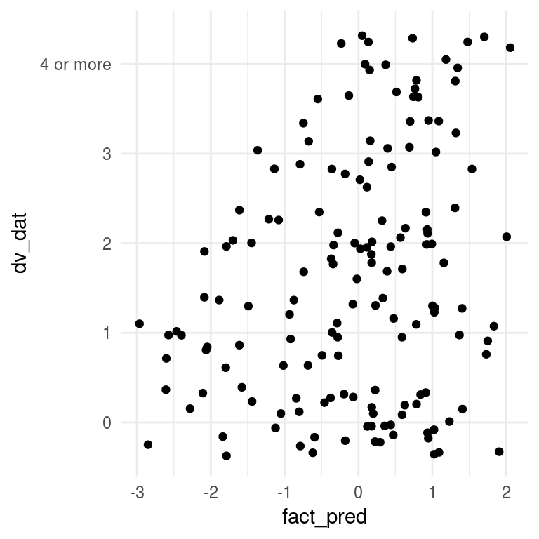
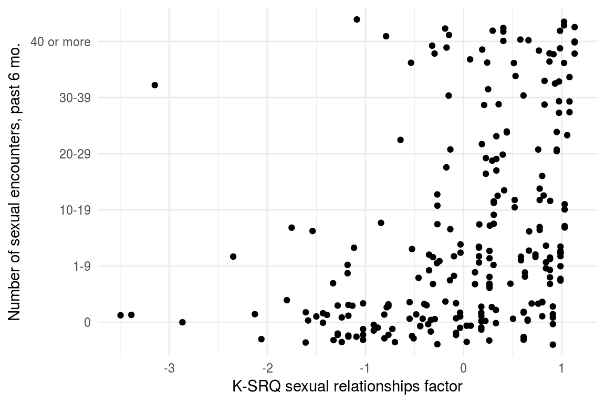

Fundamental Social Motives Confirmatory Factor Analysis
John Flournoy
2018-07-06
fsmi-cfa.RmdBelow, I begin to examine the fit of scales measuring behaviors, beliefs, attitudes, and strategies relevant to mate-seeking and status motives. After examining the item distributions to see if there are any very problematic subsets, I fit a confirmatory factor analysis to remaining scales. I also confirm that an exploratory factor analysis shows expected factor structure.
Checking Items
FSMI

The CFA will not include kin care (missing data), family care (highly skewed), and mate retention general (highly skewed).


Confirmatory factor analyses and exploration
FSMI
| Df | AIC | BIC | Chisq | Chisq diff | Df diff | Pr(>Chisq) | cfi | rmsea | mfi | |
|---|---|---|---|---|---|---|---|---|---|---|
| fsmi_cfa_method | 1004 | 35242.29 | 35992.85 | 1678.665 | NA | NA | NA | 0.864 | 0.055 | 0.222 |
| fsmi_cfa | 1052 | 35492.99 | 36079.80 | 2025.366 | NA | 48 | NA | 0.804 | 0.064 | 0.114 |
#> lavaan (0.6-1.1193) converged normally after 100 iterations
#>
#> Used Total
#> Number of observations 224 334
#> Number of missing patterns 22
#>
#> Estimator ML Robust
#> Model Fit Test Statistic 2025.366 1537.931
#> Degrees of freedom 1052 1052
#> P-value (Chi-square) 0.000 0.000
#> Scaling correction factor 1.317
#> for the Yuan-Bentler correction
#>
#> Parameter Estimates:
#>
#> Information Observed
#> Observed information based on Hessian
#> Standard Errors Robust.huber.white
#>
#> Latent Variables:
#> Estimate Std.Err z-value P(>|z|) Std.lv Std.all
#> fsmi_affgrp =~
#> fsmi_qs_31 0.926 0.096 9.687 0.000 0.926 0.692
#> fsmi_qs_32 1.097 0.088 12.487 0.000 1.097 0.769
#> fsmi_qs_33 1.048 0.090 11.653 0.000 1.048 0.827
#> fsmi_qs_34 -0.702 0.133 -5.286 0.000 -0.702 -0.464
#> fsmi_qs_35 0.503 0.093 5.416 0.000 0.503 0.472
#> fsmi_qs_36 0.603 0.117 5.161 0.000 0.603 0.486
#> fsmi_affexc =~
#> fsmi_qs_37 1.160 0.098 11.861 0.000 1.160 0.790
#> fsmi_qs_38 1.225 0.091 13.453 0.000 1.225 0.807
#> fsmi_qs_39 1.007 0.101 9.981 0.000 1.007 0.766
#> fsmi_qs_40 1.029 0.133 7.726 0.000 1.029 0.641
#> fsmi_qs_41 0.994 0.126 7.893 0.000 0.994 0.590
#> fsmi_qs_42 0.957 0.151 6.359 0.000 0.957 0.612
#> fsmi_affind =~
#> fsmi_qs_43 1.190 0.117 10.130 0.000 1.190 0.751
#> fsmi_qs_44 0.971 0.118 8.237 0.000 0.971 0.645
#> fsmi_qs_45 0.906 0.121 7.458 0.000 0.906 0.557
#> fsmi_qs_46 1.180 0.116 10.128 0.000 1.180 0.708
#> fsmi_qs_47 0.879 0.126 6.949 0.000 0.879 0.635
#> fsmi_qs_48 1.112 0.115 9.642 0.000 1.112 0.759
#> fsmi_dis =~
#> fsmi_qs_25 -0.895 0.127 -7.077 0.000 -0.895 -0.563
#> fsmi_qs_26 -0.947 0.117 -8.071 0.000 -0.947 -0.616
#> fsmi_qs_27 -0.981 0.136 -7.232 0.000 -0.981 -0.602
#> fsmi_qs_28 1.222 0.093 13.115 0.000 1.222 0.764
#> fsmi_qs_29 1.031 0.105 9.835 0.000 1.031 0.683
#> fsmi_qs_30 1.224 0.096 12.775 0.000 1.224 0.785
#> fsmi_retbrk =~
#> fsmi_qs_7 1.450 0.072 20.035 0.000 1.450 0.840
#> fsmi_qs_8 1.133 0.109 10.351 0.000 1.133 0.684
#> fsmi_qs_9 1.391 0.085 16.403 0.000 1.391 0.854
#> fsmi_qs_10 1.459 0.084 17.289 0.000 1.459 0.854
#> fsmi_qs_11 0.890 0.108 8.248 0.000 0.890 0.575
#> fsmi_qs_12 1.125 0.099 11.398 0.000 1.125 0.730
#> fsmi_prot =~
#> fsmi_qs_19 1.276 0.085 14.931 0.000 1.276 0.805
#> fsmi_qs_20 0.944 0.086 10.928 0.000 0.944 0.711
#> fsmi_qs_21 -0.671 0.105 -6.416 0.000 -0.671 -0.503
#> fsmi_qs_22 1.131 0.089 12.770 0.000 1.131 0.750
#> fsmi_qs_23 1.208 0.091 13.257 0.000 1.208 0.797
#> fsmi_qs_24 0.977 0.086 11.365 0.000 0.977 0.735
#> fsmi_stat =~
#> fsmi_qs_49 0.824 0.130 6.342 0.000 0.824 0.569
#> fsmi_qs_50 0.724 0.119 6.090 0.000 0.724 0.528
#> fsmi_qs_51 0.761 0.099 7.697 0.000 0.761 0.607
#> fsmi_qs_52 0.810 0.122 6.667 0.000 0.810 0.574
#> fsmi_qs_53 0.801 0.109 7.336 0.000 0.801 0.594
#> fsmi_qs_54 -0.408 0.155 -2.628 0.009 -0.408 -0.296
#> fsmi_mate =~
#> fsmi_qs_55 1.403 0.092 15.285 0.000 1.403 0.761
#> fsmi_qs_56 1.895 0.076 25.053 0.000 1.895 0.914
#> fsmi_qs_57 -1.427 0.112 -12.732 0.000 -1.427 -0.720
#> fsmi_qs_58 -1.013 0.121 -8.372 0.000 -1.013 -0.572
#> fsmi_qs_59 -0.913 0.133 -6.865 0.000 -0.913 -0.501
#> fsmi_qs_60 1.901 0.068 28.073 0.000 1.901 0.916
#>
#> Covariances:
#> Estimate Std.Err z-value P(>|z|) Std.lv Std.all
#> fsmi_affgrp ~~
#> fsmi_affexc 0.431 0.091 4.714 0.000 0.431 0.431
#> fsmi_affind -0.402 0.096 -4.163 0.000 -0.402 -0.402
#> fsmi_dis 0.131 0.073 1.789 0.074 0.131 0.131
#> fsmi_retbrk 0.150 0.081 1.847 0.065 0.150 0.150
#> fsmi_prot 0.190 0.086 2.222 0.026 0.190 0.190
#> fsmi_stat 0.415 0.102 4.090 0.000 0.415 0.415
#> fsmi_mate 0.199 0.071 2.785 0.005 0.199 0.199
#> fsmi_affexc ~~
#> fsmi_affind -0.166 0.091 -1.825 0.068 -0.166 -0.166
#> fsmi_dis -0.062 0.086 -0.721 0.471 -0.062 -0.062
#> fsmi_retbrk 0.278 0.094 2.955 0.003 0.278 0.278
#> fsmi_prot 0.151 0.087 1.741 0.082 0.151 0.151
#> fsmi_stat 0.334 0.114 2.919 0.004 0.334 0.334
#> fsmi_mate 0.201 0.077 2.618 0.009 0.201 0.201
#> fsmi_affind ~~
#> fsmi_dis -0.089 0.087 -1.020 0.308 -0.089 -0.089
#> fsmi_retbrk 0.103 0.084 1.226 0.220 0.103 0.103
#> fsmi_prot 0.141 0.094 1.501 0.133 0.141 0.141
#> fsmi_stat -0.011 0.106 -0.103 0.918 -0.011 -0.011
#> fsmi_mate -0.091 0.074 -1.217 0.224 -0.091 -0.091
#> fsmi_dis ~~
#> fsmi_retbrk 0.053 0.094 0.566 0.571 0.053 0.053
#> fsmi_prot -0.220 0.096 -2.276 0.023 -0.220 -0.220
#> fsmi_stat 0.025 0.096 0.255 0.799 0.025 0.025
#> fsmi_mate 0.090 0.080 1.129 0.259 0.090 0.090
#> fsmi_retbrk ~~
#> fsmi_prot 0.096 0.087 1.104 0.270 0.096 0.096
#> fsmi_stat 0.083 0.091 0.908 0.364 0.083 0.083
#> fsmi_mate 0.378 0.072 5.238 0.000 0.378 0.378
#> fsmi_prot ~~
#> fsmi_stat 0.331 0.085 3.893 0.000 0.331 0.331
#> fsmi_mate -0.119 0.079 -1.504 0.132 -0.119 -0.119
#> fsmi_stat ~~
#> fsmi_mate 0.093 0.087 1.066 0.287 0.093 0.093
#>
#> Intercepts:
#> Estimate Std.Err z-value P(>|z|) Std.lv Std.all
#> .fsmi_qs_31 5.034 0.090 56.161 0.000 5.034 3.760
#> .fsmi_qs_32 5.000 0.095 52.449 0.000 5.000 3.504
#> .fsmi_qs_33 5.437 0.085 64.272 0.000 5.437 4.294
#> .fsmi_qs_34 3.741 0.101 36.999 0.000 3.741 2.472
#> .fsmi_qs_35 5.478 0.071 77.005 0.000 5.478 5.145
#> .fsmi_qs_36 5.594 0.083 67.554 0.000 5.594 4.514
#> .fsmi_qs_37 4.904 0.099 49.670 0.000 4.904 3.342
#> .fsmi_qs_38 4.713 0.102 46.083 0.000 4.713 3.104
#> .fsmi_qs_39 4.945 0.088 55.939 0.000 4.945 3.764
#> .fsmi_qs_40 4.801 0.108 44.365 0.000 4.801 2.988
#> .fsmi_qs_41 4.339 0.114 38.133 0.000 4.339 2.574
#> .fsmi_qs_42 4.832 0.105 45.857 0.000 4.832 3.087
#> .fsmi_qs_43 3.717 0.106 35.054 0.000 3.717 2.347
#> .fsmi_qs_44 3.112 0.101 30.806 0.000 3.112 2.066
#> .fsmi_qs_45 3.319 0.109 30.488 0.000 3.319 2.041
#> .fsmi_qs_46 4.741 0.112 42.466 0.000 4.741 2.844
#> .fsmi_qs_47 5.332 0.093 57.608 0.000 5.332 3.854
#> .fsmi_qs_48 4.795 0.098 48.993 0.000 4.795 3.273
#> .fsmi_qs_25 4.045 0.106 38.030 0.000 4.045 2.541
#> .fsmi_qs_26 4.607 0.103 44.725 0.000 4.607 2.999
#> .fsmi_qs_27 3.562 0.109 32.653 0.000 3.562 2.185
#> .fsmi_qs_28 3.884 0.107 36.198 0.000 3.884 2.429
#> .fsmi_qs_29 3.788 0.101 37.462 0.000 3.788 2.508
#> .fsmi_qs_30 3.892 0.105 37.244 0.000 3.892 2.497
#> .fsmi_qs_7 3.575 0.117 30.671 0.000 3.575 2.071
#> .fsmi_qs_8 3.606 0.112 32.184 0.000 3.606 2.177
#> .fsmi_qs_9 3.520 0.110 31.951 0.000 3.520 2.160
#> .fsmi_qs_10 3.662 0.115 31.719 0.000 3.662 2.144
#> .fsmi_qs_11 3.799 0.105 36.320 0.000 3.799 2.457
#> .fsmi_qs_12 3.469 0.104 33.329 0.000 3.469 2.250
#> .fsmi_qs_19 4.625 0.106 43.578 0.000 4.625 2.916
#> .fsmi_qs_20 4.940 0.089 55.662 0.000 4.940 3.722
#> .fsmi_qs_21 3.031 0.089 34.002 0.000 3.031 2.272
#> .fsmi_qs_22 4.650 0.101 46.060 0.000 4.650 3.083
#> .fsmi_qs_23 4.951 0.101 48.894 0.000 4.951 3.267
#> .fsmi_qs_24 5.255 0.089 59.022 0.000 5.255 3.951
#> .fsmi_qs_49 4.649 0.097 47.947 0.000 4.649 3.208
#> .fsmi_qs_50 5.030 0.092 54.585 0.000 5.030 3.671
#> .fsmi_qs_51 4.723 0.084 56.296 0.000 4.723 3.768
#> .fsmi_qs_52 4.252 0.094 45.043 0.000 4.252 3.015
#> .fsmi_qs_53 5.062 0.090 56.202 0.000 5.062 3.755
#> .fsmi_qs_54 4.175 0.092 45.211 0.000 4.175 3.027
#> .fsmi_qs_55 3.557 0.123 28.842 0.000 3.557 1.929
#> .fsmi_qs_56 3.828 0.139 27.586 0.000 3.828 1.846
#> .fsmi_qs_57 3.652 0.132 27.562 0.000 3.652 1.842
#> .fsmi_qs_58 4.639 0.119 39.031 0.000 4.639 2.620
#> .fsmi_qs_59 3.386 0.122 27.806 0.000 3.386 1.857
#> .fsmi_qs_60 3.634 0.139 26.217 0.000 3.634 1.752
#> fsmi_affgrp 0.000 0.000 0.000
#> fsmi_affexc 0.000 0.000 0.000
#> fsmi_affind 0.000 0.000 0.000
#> fsmi_dis 0.000 0.000 0.000
#> fsmi_retbrk 0.000 0.000 0.000
#> fsmi_prot 0.000 0.000 0.000
#> fsmi_stat 0.000 0.000 0.000
#> fsmi_mate 0.000 0.000 0.000
#>
#> Variances:
#> Estimate Std.Err z-value P(>|z|) Std.lv Std.all
#> .fsmi_qs_31 0.935 0.140 6.690 0.000 0.935 0.522
#> .fsmi_qs_32 0.832 0.143 5.834 0.000 0.832 0.408
#> .fsmi_qs_33 0.506 0.092 5.487 0.000 0.506 0.316
#> .fsmi_qs_34 1.797 0.216 8.320 0.000 1.797 0.785
#> .fsmi_qs_35 0.881 0.107 8.263 0.000 0.881 0.777
#> .fsmi_qs_36 1.173 0.192 6.107 0.000 1.173 0.764
#> .fsmi_qs_37 0.809 0.155 5.210 0.000 0.809 0.375
#> .fsmi_qs_38 0.805 0.163 4.936 0.000 0.805 0.349
#> .fsmi_qs_39 0.712 0.105 6.799 0.000 0.712 0.413
#> .fsmi_qs_40 1.522 0.228 6.662 0.000 1.522 0.590
#> .fsmi_qs_41 1.853 0.243 7.620 0.000 1.853 0.652
#> .fsmi_qs_42 1.532 0.273 5.603 0.000 1.532 0.626
#> .fsmi_qs_43 1.092 0.233 4.689 0.000 1.092 0.435
#> .fsmi_qs_44 1.325 0.196 6.764 0.000 1.325 0.584
#> .fsmi_qs_45 1.825 0.204 8.927 0.000 1.825 0.690
#> .fsmi_qs_46 1.387 0.224 6.181 0.000 1.387 0.499
#> .fsmi_qs_47 1.142 0.216 5.301 0.000 1.142 0.597
#> .fsmi_qs_48 0.910 0.218 4.178 0.000 0.910 0.424
#> .fsmi_qs_25 1.732 0.212 8.166 0.000 1.732 0.684
#> .fsmi_qs_26 1.464 0.228 6.427 0.000 1.464 0.620
#> .fsmi_qs_27 1.695 0.241 7.038 0.000 1.695 0.638
#> .fsmi_qs_28 1.063 0.189 5.630 0.000 1.063 0.416
#> .fsmi_qs_29 1.218 0.197 6.174 0.000 1.218 0.534
#> .fsmi_qs_30 0.931 0.177 5.273 0.000 0.931 0.383
#> .fsmi_qs_7 0.878 0.114 7.705 0.000 0.878 0.294
#> .fsmi_qs_8 1.459 0.213 6.838 0.000 1.459 0.532
#> .fsmi_qs_9 0.721 0.137 5.266 0.000 0.721 0.272
#> .fsmi_qs_10 0.788 0.160 4.918 0.000 0.788 0.270
#> .fsmi_qs_11 1.600 0.175 9.134 0.000 1.600 0.669
#> .fsmi_qs_12 1.110 0.187 5.943 0.000 1.110 0.467
#> .fsmi_qs_19 0.887 0.175 5.066 0.000 0.887 0.353
#> .fsmi_qs_20 0.870 0.116 7.499 0.000 0.870 0.494
#> .fsmi_qs_21 1.330 0.158 8.426 0.000 1.330 0.747
#> .fsmi_qs_22 0.994 0.142 6.982 0.000 0.994 0.437
#> .fsmi_qs_23 0.839 0.134 6.238 0.000 0.839 0.365
#> .fsmi_qs_24 0.814 0.137 5.936 0.000 0.814 0.460
#> .fsmi_qs_49 1.421 0.221 6.414 0.000 1.421 0.677
#> .fsmi_qs_50 1.354 0.171 7.911 0.000 1.354 0.721
#> .fsmi_qs_51 0.992 0.153 6.494 0.000 0.992 0.631
#> .fsmi_qs_52 1.333 0.186 7.149 0.000 1.333 0.670
#> .fsmi_qs_53 1.176 0.160 7.360 0.000 1.176 0.647
#> .fsmi_qs_54 1.735 0.191 9.071 0.000 1.735 0.912
#> .fsmi_qs_55 1.429 0.178 8.034 0.000 1.429 0.420
#> .fsmi_qs_56 0.708 0.177 4.002 0.000 0.708 0.165
#> .fsmi_qs_57 1.895 0.270 7.006 0.000 1.895 0.482
#> .fsmi_qs_58 2.107 0.294 7.171 0.000 2.107 0.672
#> .fsmi_qs_59 2.491 0.258 9.650 0.000 2.491 0.749
#> .fsmi_qs_60 0.690 0.153 4.523 0.000 0.690 0.160
#> fsmi_affgrp 1.000 1.000 1.000
#> fsmi_affexc 1.000 1.000 1.000
#> fsmi_affind 1.000 1.000 1.000
#> fsmi_dis 1.000 1.000 1.000
#> fsmi_retbrk 1.000 1.000 1.000
#> fsmi_prot 1.000 1.000 1.000
#> fsmi_stat 1.000 1.000 1.000
#> fsmi_mate 1.000 1.000 1.000
#> lavaan (0.6-1.1193) converged normally after 126 iterations
#>
#> Used Total
#> Number of observations 224 334
#> Number of missing patterns 22
#>
#> Estimator ML Robust
#> Model Fit Test Statistic 1678.665 398.606
#> Degrees of freedom 1004 1004
#> P-value (Chi-square) 0.000 1.000
#> Scaling correction factor 4.211
#> for the Yuan-Bentler correction
#>
#> Parameter Estimates:
#>
#> Information Observed
#> Observed information based on Hessian
#> Standard Errors Robust.huber.white
#>
#> Latent Variables:
#> Estimate Std.Err z-value P(>|z|) Std.lv Std.all
#> fsmi_affgrp =~
#> fsmi_qs_31 0.733 0.091 8.012 0.000 0.733 0.548
#> fsmi_qs_32 1.067 0.084 12.747 0.000 1.067 0.748
#> fsmi_qs_33 1.028 0.076 13.452 0.000 1.028 0.812
#> fsmi_qs_34 -0.853 0.116 -7.382 0.000 -0.853 -0.564
#> fsmi_qs_35 0.443 0.081 5.487 0.000 0.443 0.416
#> fsmi_qs_36 0.421 0.104 4.059 0.000 0.421 0.339
#> fsmi_affexc =~
#> fsmi_qs_37 0.592 0.185 3.203 0.001 0.592 0.403
#> fsmi_qs_38 0.610 0.188 3.243 0.001 0.610 0.402
#> fsmi_qs_39 0.498 0.155 3.202 0.001 0.498 0.379
#> fsmi_qs_40 -0.387 0.182 -2.129 0.033 -0.387 -0.241
#> fsmi_qs_41 -0.323 0.220 -1.468 0.142 -0.323 -0.191
#> fsmi_qs_42 -0.561 0.202 -2.777 0.005 -0.561 -0.358
#> fsmi_affind =~
#> fsmi_qs_43 1.170 0.126 9.313 0.000 1.170 0.738
#> fsmi_qs_44 0.949 0.120 7.884 0.000 0.949 0.630
#> fsmi_qs_45 0.866 0.127 6.829 0.000 0.866 0.533
#> fsmi_qs_46 1.183 0.111 10.694 0.000 1.183 0.710
#> fsmi_qs_47 0.923 0.125 7.407 0.000 0.923 0.667
#> fsmi_qs_48 1.127 0.113 9.957 0.000 1.127 0.770
#> fsmi_dis =~
#> fsmi_qs_25 -0.873 0.122 -7.163 0.000 -0.873 -0.549
#> fsmi_qs_26 -0.929 0.112 -8.305 0.000 -0.929 -0.605
#> fsmi_qs_27 -0.960 0.131 -7.347 0.000 -0.960 -0.589
#> fsmi_qs_28 1.221 0.094 12.936 0.000 1.221 0.764
#> fsmi_qs_29 1.050 0.102 10.241 0.000 1.050 0.695
#> fsmi_qs_30 1.235 0.095 12.940 0.000 1.235 0.792
#> fsmi_retbrk =~
#> fsmi_qs_7 1.330 0.086 15.424 0.000 1.330 0.771
#> fsmi_qs_8 0.968 0.124 7.783 0.000 0.968 0.585
#> fsmi_qs_9 1.359 0.084 16.149 0.000 1.359 0.835
#> fsmi_qs_10 1.348 0.095 14.239 0.000 1.348 0.790
#> fsmi_qs_11 0.779 0.115 6.781 0.000 0.779 0.504
#> fsmi_qs_12 1.102 0.097 11.401 0.000 1.102 0.716
#> fsmi_prot =~
#> fsmi_qs_19 1.248 0.090 13.802 0.000 1.248 0.787
#> fsmi_qs_20 0.929 0.089 10.474 0.000 0.929 0.700
#> fsmi_qs_21 -0.680 0.108 -6.286 0.000 -0.680 -0.509
#> fsmi_qs_22 1.073 0.096 11.213 0.000 1.073 0.711
#> fsmi_qs_23 1.186 0.095 12.460 0.000 1.186 0.783
#> fsmi_qs_24 0.983 0.088 11.231 0.000 0.983 0.739
#> fsmi_stat =~
#> fsmi_qs_49 0.784 0.127 6.178 0.000 0.784 0.541
#> fsmi_qs_50 0.889 0.115 7.729 0.000 0.889 0.647
#> fsmi_qs_51 0.766 0.102 7.483 0.000 0.766 0.611
#> fsmi_qs_52 0.624 0.121 5.168 0.000 0.624 0.442
#> fsmi_qs_53 0.721 0.110 6.565 0.000 0.721 0.535
#> fsmi_qs_54 -0.273 0.150 -1.823 0.068 -0.273 -0.198
#> fsmi_mate =~
#> fsmi_qs_55 1.347 0.097 13.888 0.000 1.347 0.731
#> fsmi_qs_56 1.847 0.081 22.916 0.000 1.847 0.890
#> fsmi_qs_57 -1.410 0.114 -12.359 0.000 -1.410 -0.711
#> fsmi_qs_58 -1.034 0.114 -9.033 0.000 -1.034 -0.584
#> fsmi_qs_59 -0.894 0.135 -6.632 0.000 -0.894 -0.490
#> fsmi_qs_60 1.873 0.070 26.600 0.000 1.873 0.903
#> fsmi_bifac =~
#> fsmi_qs_31 0.619 0.115 5.389 0.000 0.619 0.463
#> fsmi_qs_32 0.337 0.136 2.471 0.013 0.337 0.236
#> fsmi_qs_33 0.286 0.143 2.006 0.045 0.286 0.226
#> fsmi_qs_34 0.128 0.126 1.017 0.309 0.128 0.085
#> fsmi_qs_35 0.220 0.105 2.099 0.036 0.220 0.206
#> fsmi_qs_36 0.523 0.120 4.350 0.000 0.523 0.422
#> fsmi_qs_37 1.044 0.129 8.099 0.000 1.044 0.711
#> fsmi_qs_38 1.120 0.120 9.353 0.000 1.120 0.737
#> fsmi_qs_39 0.917 0.124 7.411 0.000 0.917 0.699
#> fsmi_qs_40 1.219 0.112 10.890 0.000 1.219 0.758
#> fsmi_qs_41 1.099 0.107 10.299 0.000 1.099 0.652
#> fsmi_qs_42 1.191 0.114 10.465 0.000 1.191 0.760
#> fsmi_qs_43 -0.052 0.161 -0.321 0.748 -0.052 -0.033
#> fsmi_qs_44 -0.109 0.143 -0.762 0.446 -0.109 -0.072
#> fsmi_qs_45 -0.518 0.147 -3.516 0.000 -0.518 -0.318
#> fsmi_qs_46 -0.223 0.136 -1.644 0.100 -0.223 -0.134
#> fsmi_qs_47 0.201 0.140 1.428 0.153 0.201 0.145
#> fsmi_qs_48 -0.011 0.144 -0.077 0.939 -0.011 -0.007
#> fsmi_qs_25 0.272 0.120 2.268 0.023 0.272 0.171
#> fsmi_qs_26 0.255 0.133 1.922 0.055 0.255 0.166
#> fsmi_qs_27 0.250 0.134 1.871 0.061 0.250 0.153
#> fsmi_qs_28 -0.056 0.130 -0.431 0.667 -0.056 -0.035
#> fsmi_qs_29 0.081 0.124 0.655 0.513 0.081 0.054
#> fsmi_qs_30 0.011 0.138 0.081 0.935 0.011 0.007
#> fsmi_qs_7 0.567 0.143 3.969 0.000 0.567 0.329
#> fsmi_qs_8 0.621 0.133 4.681 0.000 0.621 0.375
#> fsmi_qs_9 0.367 0.139 2.644 0.008 0.367 0.225
#> fsmi_qs_10 0.554 0.143 3.884 0.000 0.554 0.325
#> fsmi_qs_11 0.426 0.133 3.199 0.001 0.426 0.275
#> fsmi_qs_12 0.268 0.135 1.977 0.048 0.268 0.174
#> fsmi_qs_19 0.262 0.131 2.006 0.045 0.262 0.165
#> fsmi_qs_20 0.176 0.107 1.654 0.098 0.176 0.133
#> fsmi_qs_21 -0.033 0.107 -0.314 0.754 -0.033 -0.025
#> fsmi_qs_22 0.403 0.127 3.177 0.001 0.403 0.268
#> fsmi_qs_23 0.224 0.131 1.706 0.088 0.224 0.148
#> fsmi_qs_24 0.092 0.103 0.897 0.370 0.092 0.069
#> fsmi_qs_49 0.300 0.138 2.180 0.029 0.300 0.207
#> fsmi_qs_50 -0.081 0.132 -0.615 0.539 -0.081 -0.059
#> fsmi_qs_51 0.148 0.110 1.351 0.177 0.148 0.118
#> fsmi_qs_52 0.517 0.107 4.827 0.000 0.517 0.366
#> fsmi_qs_53 0.306 0.121 2.535 0.011 0.306 0.227
#> fsmi_qs_54 -0.349 0.122 -2.852 0.004 -0.349 -0.253
#> fsmi_qs_55 0.417 0.139 3.000 0.003 0.417 0.226
#> fsmi_qs_56 0.425 0.159 2.668 0.008 0.425 0.205
#> fsmi_qs_57 -0.229 0.154 -1.485 0.137 -0.229 -0.115
#> fsmi_qs_58 -0.020 0.155 -0.128 0.898 -0.020 -0.011
#> fsmi_qs_59 -0.190 0.162 -1.173 0.241 -0.190 -0.104
#> fsmi_qs_60 0.335 0.145 2.318 0.020 0.335 0.162
#>
#> Covariances:
#> Estimate Std.Err z-value P(>|z|) Std.lv Std.all
#> fsmi_affgrp ~~
#> fsmi_bifac 0.000 0.000 0.000
#> fsmi_affexc ~~
#> fsmi_bifac 0.000 0.000 0.000
#> fsmi_affind ~~
#> fsmi_bifac 0.000 0.000 0.000
#> fsmi_dis ~~
#> fsmi_bifac 0.000 0.000 0.000
#> fsmi_retbrk ~~
#> fsmi_bifac 0.000 0.000 0.000
#> fsmi_prot ~~
#> fsmi_bifac 0.000 0.000 0.000
#> fsmi_stat ~~
#> fsmi_bifac 0.000 0.000 0.000
#> fsmi_mate ~~
#> fsmi_bifac 0.000 0.000 0.000
#> fsmi_affgrp ~~
#> fsmi_affexc 0.269 0.111 2.428 0.015 0.269 0.269
#> fsmi_affind -0.383 0.103 -3.735 0.000 -0.383 -0.383
#> fsmi_dis 0.171 0.076 2.270 0.023 0.171 0.171
#> fsmi_retbrk 0.025 0.080 0.309 0.757 0.025 0.025
#> fsmi_prot 0.123 0.087 1.411 0.158 0.123 0.123
#> fsmi_stat 0.329 0.103 3.196 0.001 0.329 0.329
#> fsmi_mate 0.134 0.075 1.783 0.075 0.134 0.134
#> fsmi_affexc ~~
#> fsmi_affind -0.372 0.089 -4.195 0.000 -0.372 -0.372
#> fsmi_dis 0.040 0.098 0.409 0.683 0.040 0.040
#> fsmi_retbrk -0.306 0.090 -3.415 0.001 -0.306 -0.306
#> fsmi_prot -0.112 0.099 -1.130 0.258 -0.112 -0.112
#> fsmi_stat 0.163 0.105 1.556 0.120 0.163 0.163
#> fsmi_mate -0.021 0.100 -0.208 0.836 -0.021 -0.021
#> fsmi_affind ~~
#> fsmi_dis -0.091 0.088 -1.029 0.303 -0.091 -0.091
#> fsmi_retbrk 0.137 0.089 1.538 0.124 0.137 0.137
#> fsmi_prot 0.161 0.090 1.784 0.074 0.161 0.161
#> fsmi_stat 0.039 0.109 0.362 0.717 0.039 0.039
#> fsmi_mate -0.074 0.076 -0.981 0.327 -0.074 -0.074
#> fsmi_dis ~~
#> fsmi_retbrk 0.090 0.093 0.971 0.331 0.090 0.090
#> fsmi_prot -0.206 0.100 -2.069 0.039 -0.206 -0.206
#> fsmi_stat 0.045 0.100 0.447 0.655 0.045 0.045
#> fsmi_mate 0.109 0.079 1.373 0.170 0.109 0.109
#> fsmi_retbrk ~~
#> fsmi_prot 0.022 0.090 0.248 0.804 0.022 0.022
#> fsmi_stat -0.034 0.100 -0.338 0.735 -0.034 -0.034
#> fsmi_mate 0.334 0.078 4.260 0.000 0.334 0.334
#> fsmi_prot ~~
#> fsmi_stat 0.291 0.090 3.218 0.001 0.291 0.291
#> fsmi_mate -0.166 0.077 -2.163 0.031 -0.166 -0.166
#> fsmi_stat ~~
#> fsmi_mate 0.031 0.095 0.324 0.746 0.031 0.031
#>
#> Intercepts:
#> Estimate Std.Err z-value P(>|z|) Std.lv Std.all
#> .fsmi_qs_31 5.032 0.090 56.121 0.000 5.032 3.763
#> .fsmi_qs_32 5.000 0.095 52.449 0.000 5.000 3.504
#> .fsmi_qs_33 5.437 0.085 64.272 0.000 5.437 4.294
#> .fsmi_qs_34 3.741 0.101 36.999 0.000 3.741 2.472
#> .fsmi_qs_35 5.478 0.071 77.006 0.000 5.478 5.145
#> .fsmi_qs_36 5.594 0.083 67.554 0.000 5.594 4.514
#> .fsmi_qs_37 4.899 0.099 49.538 0.000 4.899 3.339
#> .fsmi_qs_38 4.709 0.102 46.002 0.000 4.709 3.101
#> .fsmi_qs_39 4.940 0.089 55.823 0.000 4.940 3.763
#> .fsmi_qs_40 4.804 0.109 44.234 0.000 4.804 2.989
#> .fsmi_qs_41 4.336 0.114 38.072 0.000 4.336 2.573
#> .fsmi_qs_42 4.834 0.106 45.707 0.000 4.834 3.086
#> .fsmi_qs_43 3.718 0.106 35.068 0.000 3.718 2.347
#> .fsmi_qs_44 3.112 0.101 30.811 0.000 3.112 2.067
#> .fsmi_qs_45 3.320 0.109 30.488 0.000 3.320 2.041
#> .fsmi_qs_46 4.741 0.112 42.492 0.000 4.741 2.844
#> .fsmi_qs_47 5.331 0.093 57.553 0.000 5.331 3.854
#> .fsmi_qs_48 4.795 0.098 48.993 0.000 4.795 3.273
#> .fsmi_qs_25 4.045 0.106 38.030 0.000 4.045 2.541
#> .fsmi_qs_26 4.606 0.103 44.670 0.000 4.606 2.998
#> .fsmi_qs_27 3.561 0.109 32.647 0.000 3.561 2.185
#> .fsmi_qs_28 3.883 0.107 36.197 0.000 3.883 2.428
#> .fsmi_qs_29 3.787 0.101 37.440 0.000 3.787 2.507
#> .fsmi_qs_30 3.893 0.105 37.233 0.000 3.893 2.498
#> .fsmi_qs_7 3.573 0.116 30.694 0.000 3.573 2.072
#> .fsmi_qs_8 3.603 0.112 32.210 0.000 3.603 2.177
#> .fsmi_qs_9 3.518 0.110 31.985 0.000 3.518 2.161
#> .fsmi_qs_10 3.660 0.115 31.756 0.000 3.660 2.145
#> .fsmi_qs_11 3.797 0.105 36.289 0.000 3.797 2.455
#> .fsmi_qs_12 3.469 0.104 33.399 0.000 3.469 2.255
#> .fsmi_qs_19 4.625 0.106 43.539 0.000 4.625 2.916
#> .fsmi_qs_20 4.940 0.089 55.668 0.000 4.940 3.722
#> .fsmi_qs_21 3.031 0.089 34.002 0.000 3.031 2.272
#> .fsmi_qs_22 4.648 0.101 46.033 0.000 4.648 3.082
#> .fsmi_qs_23 4.951 0.101 48.894 0.000 4.951 3.267
#> .fsmi_qs_24 5.256 0.089 59.035 0.000 5.256 3.950
#> .fsmi_qs_49 4.649 0.097 47.945 0.000 4.649 3.208
#> .fsmi_qs_50 5.038 0.092 54.744 0.000 5.038 3.666
#> .fsmi_qs_51 4.724 0.084 56.339 0.000 4.724 3.770
#> .fsmi_qs_52 4.253 0.094 45.054 0.000 4.253 3.016
#> .fsmi_qs_53 5.062 0.090 56.202 0.000 5.062 3.755
#> .fsmi_qs_54 4.175 0.092 45.211 0.000 4.175 3.028
#> .fsmi_qs_55 3.556 0.123 28.837 0.000 3.556 1.929
#> .fsmi_qs_56 3.828 0.139 27.580 0.000 3.828 1.846
#> .fsmi_qs_57 3.652 0.132 27.562 0.000 3.652 1.842
#> .fsmi_qs_58 4.638 0.119 39.027 0.000 4.638 2.620
#> .fsmi_qs_59 3.386 0.122 27.805 0.000 3.386 1.857
#> .fsmi_qs_60 3.634 0.139 26.217 0.000 3.634 1.752
#> fsmi_affgrp 0.000 0.000 0.000
#> fsmi_affexc 0.000 0.000 0.000
#> fsmi_affind 0.000 0.000 0.000
#> fsmi_dis 0.000 0.000 0.000
#> fsmi_retbrk 0.000 0.000 0.000
#> fsmi_prot 0.000 0.000 0.000
#> fsmi_stat 0.000 0.000 0.000
#> fsmi_mate 0.000 0.000 0.000
#> fsmi_bifac 0.000 0.000 0.000
#>
#> Variances:
#> Estimate Std.Err z-value P(>|z|) Std.lv Std.all
#> .fsmi_qs_31 0.869 0.121 7.174 0.000 0.869 0.486
#> .fsmi_qs_32 0.784 0.136 5.746 0.000 0.784 0.385
#> .fsmi_qs_33 0.465 0.085 5.469 0.000 0.465 0.290
#> .fsmi_qs_34 1.546 0.202 7.649 0.000 1.546 0.675
#> .fsmi_qs_35 0.889 0.107 8.334 0.000 0.889 0.784
#> .fsmi_qs_36 1.085 0.164 6.601 0.000 1.085 0.707
#> .fsmi_qs_37 0.713 0.150 4.752 0.000 0.713 0.331
#> .fsmi_qs_38 0.680 0.133 5.123 0.000 0.680 0.295
#> .fsmi_qs_39 0.634 0.121 5.227 0.000 0.634 0.368
#> .fsmi_qs_40 0.948 0.165 5.760 0.000 0.948 0.367
#> .fsmi_qs_41 1.527 0.214 7.119 0.000 1.527 0.538
#> .fsmi_qs_42 0.722 0.170 4.238 0.000 0.722 0.294
#> .fsmi_qs_43 1.138 0.249 4.570 0.000 1.138 0.454
#> .fsmi_qs_44 1.354 0.196 6.902 0.000 1.354 0.597
#> .fsmi_qs_45 1.627 0.196 8.300 0.000 1.627 0.615
#> .fsmi_qs_46 1.329 0.213 6.235 0.000 1.329 0.478
#> .fsmi_qs_47 1.022 0.172 5.924 0.000 1.022 0.534
#> .fsmi_qs_48 0.874 0.209 4.179 0.000 0.874 0.407
#> .fsmi_qs_25 1.697 0.194 8.766 0.000 1.697 0.670
#> .fsmi_qs_26 1.433 0.203 7.060 0.000 1.433 0.607
#> .fsmi_qs_27 1.673 0.226 7.416 0.000 1.673 0.629
#> .fsmi_qs_28 1.063 0.188 5.649 0.000 1.063 0.416
#> .fsmi_qs_29 1.174 0.194 6.067 0.000 1.174 0.514
#> .fsmi_qs_30 0.904 0.174 5.192 0.000 0.904 0.372
#> .fsmi_qs_7 0.884 0.114 7.756 0.000 0.884 0.297
#> .fsmi_qs_8 1.418 0.204 6.957 0.000 1.418 0.518
#> .fsmi_qs_9 0.668 0.132 5.066 0.000 0.668 0.252
#> .fsmi_qs_10 0.788 0.157 5.007 0.000 0.788 0.271
#> .fsmi_qs_11 1.604 0.173 9.276 0.000 1.604 0.670
#> .fsmi_qs_12 1.080 0.174 6.213 0.000 1.080 0.456
#> .fsmi_qs_19 0.890 0.177 5.018 0.000 0.890 0.354
#> .fsmi_qs_20 0.868 0.117 7.390 0.000 0.868 0.493
#> .fsmi_qs_21 1.317 0.159 8.292 0.000 1.317 0.740
#> .fsmi_qs_22 0.961 0.135 7.107 0.000 0.961 0.423
#> .fsmi_qs_23 0.839 0.138 6.074 0.000 0.839 0.365
#> .fsmi_qs_24 0.795 0.136 5.855 0.000 0.795 0.449
#> .fsmi_qs_49 1.395 0.219 6.371 0.000 1.395 0.664
#> .fsmi_qs_50 1.093 0.170 6.417 0.000 1.093 0.579
#> .fsmi_qs_51 0.961 0.153 6.291 0.000 0.961 0.612
#> .fsmi_qs_52 1.333 0.155 8.616 0.000 1.333 0.670
#> .fsmi_qs_53 1.204 0.158 7.611 0.000 1.204 0.662
#> .fsmi_qs_54 1.706 0.185 9.205 0.000 1.706 0.897
#> .fsmi_qs_55 1.411 0.177 7.959 0.000 1.411 0.415
#> .fsmi_qs_56 0.710 0.176 4.044 0.000 0.710 0.165
#> .fsmi_qs_57 1.891 0.268 7.047 0.000 1.891 0.481
#> .fsmi_qs_58 2.064 0.279 7.407 0.000 2.064 0.659
#> .fsmi_qs_59 2.489 0.257 9.674 0.000 2.489 0.749
#> .fsmi_qs_60 0.683 0.154 4.436 0.000 0.683 0.159
#> fsmi_affgrp 1.000 1.000 1.000
#> fsmi_affexc 1.000 1.000 1.000
#> fsmi_affind 1.000 1.000 1.000
#> fsmi_dis 1.000 1.000 1.000
#> fsmi_retbrk 1.000 1.000 1.000
#> fsmi_prot 1.000 1.000 1.000
#> fsmi_stat 1.000 1.000 1.000
#> fsmi_mate 1.000 1.000 1.000
#> fsmi_bifac 1.000 1.000 1.000A model for the FSMI scale without a method bifactor fits substantially worse than that with the method factor.
| Df | AIC | BIC | Chisq | Chisq diff | Df diff | Pr(>Chisq) | |
|---|---|---|---|---|---|---|---|
| fsmi_cfa_method | 1004 | 35242.29 | 35992.85 | 1678.665 | |||
| fsmi_cfa | 1052 | 35492.99 | 36079.80 | 2025.366 | 48 |
| rmsea | mfi | gammaHat | adjGammaHat | |
|---|---|---|---|---|
| baseline | 0.0642697 | 0.1138707 | 0.8461170 | 0.8279788 |
| bifac | 0.0547713 | 0.2218066 | 0.8880533 | 0.8688752 |
Exploratory factor analysis (not shown, but code for which is above) results in 8 factors, with high loadings grouped as expected and minimal cross loadings > .25. The bifactor rotation (with 9 factors) also shows this pattern.

Figure 1: FSMI CFA with method bifactor. Path weight reflects standardized loading strength, with minimum cuttoff for showing path set at .20, and maximum weight at .90 (apparent for several mate-seeking items). Residual and means not shown.

Figure 2: FSMI CFA. Path weight reflects standardized loading strength, with minimum cuttoff for showing path set at .20, and maximum weight at .90 (apparent for several mate-seeking items). Residual and means not shown.
The two factor structures are shown above.
FSMI Discussion
The factor model, fit to all but three of the original scale’s factors (child-care, care for family, general mate retention; N = 225) shows somewhat reasonable, but not great, fit (RMSEA = 0.064, \(\hat\gamma\) = 0.846). This deviates from the results reported by Neel and colleagues (2015), where each factor, or set of related factors, was tested independently. A parallel scree plot analysis (psych package version 1.7.8) suggested 8 factors, with all item loadings dominant on expected factors. There is some evidence that including a factor that accounts for an overall method factor improve model fit. Adding such a method bifactor improved the fit somewhat (RMSEA = 0.055, \(\hat\gamma\) = 0.888). Model comparison substantially favors the less parsimonious model that includes the method bifactor (\(\Delta\)AIC = 251, \(\Delta\)BIC = 87, \(\Delta\)Df = 48). Although this bifactor does improve fit across all factors, it does not load strongly on either status or mate-seeking, so I do not account for in in analyses below.
#> $fsmi_cfa_matestat_gender
#> rmsea mfi gammaHat adjGammaHat AIC
#> 0.0638 0.8976 0.9651 0.9486 9380.3014
#>
#> $fsmi_cfa_matestat_gender_metric
#> rmsea mfi gammaHat adjGammaHat AIC
#> 0.0593 0.9029 0.9669 0.9555 9367.6660
#>
#> $fsmi_cfa_matestat_gender_metric_cor
#> rmsea mfi gammaHat adjGammaHat AIC
#> 0.0572 0.9074 0.9685 0.9587 9362.4784
#>
#> $delta1
#> rmsea mfi gammaHat adjGammaHat AIC
#> -0.0045 0.0053 0.0018 0.0069 -12.6354
#>
#> $delta2
#> rmsea mfi gammaHat adjGammaHat AIC
#> -0.0022 0.0044 0.0015 0.0031 -5.1877
Figure 3: FSMI mate-seeking & status CFA. Path weights and labels reflect standardized loading strength. Residuals, exogenous variances, and means not shown.
Figure 3: FSMI mate-seeking & status CFA. Path weights and labels reflect standardized loading strength. Residuals, exogenous variances, and means not shown.
A CFA for mate-seeking and status factors fit well (RMSEA = 0.064, \(\hat\gamma\) = 0.967), with the two factors showing a small, positive, non-significant correlation (\(r = 0.06, 0.06, Z = 0.69, 0.69\)). Note that item 54, “I do not worry very much about losing status” has a particularly low loading on the status factor (standardized loading = -0.29, -0.3).
Dominance and Prestige
Measurement invariance
#> $dnp_cfa_gender
#> rmsea mfi gammaHat adjGammaHat AIC
#> 0.0967 0.5757 0.8846 0.8503 12162.9000
#>
#> $dnp_cfa_gender_metric
#> rmsea mfi gammaHat adjGammaHat AIC
#> 0.0965 0.5574 0.8786 0.8520 12162.4116
#>
#> $dnp_cfa_gender_partmetric
#> rmsea mfi gammaHat adjGammaHat AIC
#> 0.0956 0.5649 0.8811 0.8544 12157.4140
#>
#> $dnp_cfa_gender_partmetric_cor
#> rmsea mfi gammaHat adjGammaHat AIC
#> 0.0949 0.5659 0.8814 0.8566 12153.5625
#>
#> $delta1
#> rmsea mfi gammaHat adjGammaHat AIC
#> -0.0002 -0.0183 -0.0060 0.0017 -0.4883
#>
#> $delta2
#> rmsea mfi gammaHat adjGammaHat AIC
#> -0.0011 -0.0108 -0.0035 0.0041 -5.4860
#>
#> $delta3
#> rmsea mfi gammaHat adjGammaHat AIC
#> -0.0007 0.0011 0.0003 0.0021 -3.8515
#> Chi Square Difference Test
#>
#> Df AIC BIC Chisq Chisq diff Df diff
#> dnp_cfa_gender 236 12163 12518 483.37
#> dnp_cfa_gender_partmetric 250 12157 12464 505.88 22.514 14
#> Pr(>Chisq)
#> dnp_cfa_gender
#> dnp_cfa_gender_partmetric 0.06865 .
#> ---
#> Signif. codes: 0 '***' 0.001 '**' 0.01 '*' 0.05 '.' 0.1 ' ' 1
#> [1] 224
#> [1] 0.095
#> [1] 0.57
#> [1] 0.881
#> $`1`
#> dmnnc_ prstg_
#> dominance_score 1.000
#> prestige_score 0.232 1.000
#>
#> $`0`
#> dmnnc_ prstg_
#> dominance_score 1.000
#> prestige_score 0.232 1.000K-SRQ
Measurement invariance
#> $ksrq_cfa
#> rmsea mfi gammaHat adjGammaHat AIC
#> 9.289217e-02 7.752621e-01 9.271530e-01 8.876427e-01 1.321388e+04
#>
#> $ksrq_cfa_metric
#> rmsea mfi gammaHat adjGammaHat AIC
#> 9.206468e-02 7.664916e-01 9.241440e-01 8.899938e-01 1.320614e+04
#>
#> $ksrq_cfa_metric_full
#> rmsea mfi gammaHat adjGammaHat AIC
#> 9.580174e-02 7.395408e-01 9.148037e-01 8.820857e-01 1.321698e+04
#>
#> $ksrq_cfa_metric_cov
#> rmsea mfi gammaHat adjGammaHat AIC
#> 9.179351e-02 7.438135e-01 9.162942e-01 8.915697e-01 1.319530e+04
#>
#> $ksrq_cfa_gender
#> rmsea mfi gammaHat adjGammaHat AIC
#> 7.065038e-02 8.630794e-01 9.565261e-01 9.329471e-01 1.320130e+04
#>
#> $ksrq_cfa_gender_metric
#> rmsea mfi gammaHat adjGammaHat AIC
#> 7.200891e-02 8.526147e-01 9.530935e-01 9.305936e-01 1.320408e+04
#>
#> $delta1
#> rmsea mfi gammaHat adjGammaHat AIC
#> -0.0008274881 -0.0087704481 -0.0030089345 0.0023510234 -7.7412448775
#>
#> $delta1a
#> rmsea mfi gammaHat adjGammaHat AIC
#> 0.002909573 -0.035721295 -0.012349265 -0.005556982 3.095549704
#>
#> $delta2
#> rmsea mfi gammaHat adjGammaHat AIC
#> -2.711699e-04 -2.267811e-02 -7.849819e-03 1.575990e-03 -1.083868e+01
#>
#> $delta_gender
#> rmsea mfi gammaHat adjGammaHat AIC
#> 0.001358531 -0.010464673 -0.003432683 -0.002353527 2.782907013
#> Chi Square Difference Test
#>
#> Df AIC BIC Chisq Chisq diff Df diff Pr(>Chisq)
#> ksrq_cfa 236 13214 13892 398.41
#> ksrq_cfa_metric 251 13206 13827 420.66 22.259 15 0.1012
#> Chi Square Difference Test
#>
#> Df AIC BIC Chisq Chisq diff Df diff Pr(>Chisq)
#> ksrq_cfa_metric 251 13206 13827 420.66
#> ksrq_cfa_metric_cov 281 13195 13704 469.83 49.161 30 0.01513 *
#> ---
#> Signif. codes: 0 '***' 0.001 '**' 0.01 '*' 0.05 '.' 0.1 ' ' 1
#> k_srq_d k_srq_p k_sr__ k_srq_s
#> k_srq_admiration 0.000
#> k_srq_passivity 0.009 0.000
#> k_srq_sexual_relationships -0.023 0.014 0.000
#> k_srq_sociability 0.014 0.016 -0.002 0.000A CFA for the four K-SRQ factors was tested for metric invariance across samples by comparing a model with loadings constrained to equality to one with loadings free to vary across the four groups. This resulted in considerably worse model fit as determined by a change in the MFI > .01. Loading constraints were removed from four items (“I like it if others looks up to me”, “I like being a member of a group/club”, “I like kissing”, “I like flirting”) that load onto Admiration, Sociability, and Sexual Relationships, respectively. This resulted in adequately small fit differences between the unconstrained and invariant models (\(\Delta\)RMSEA = -0.00083, \(\Delta\)MFI = -0.009, \(\Delta\hat{\gamma}\) = -0.003). The final model showed somewhat poor fit (\(\text{N}_{\text{total}}\) = 319, RMSEA = 0.09, MFI = 0.77, \(\hat\gamma\) = 0.924).
Models with and without constraintes between latent variances and covariances were compared using the Akaike information criterion (AIC). Constraining equivalent latent covariance structures across groups resulted in lower AIC (\(\Delta\text{AIC} = -11\)). Loadings without constraints across groups do not contribute to this comparison, so the magnitude of correlations was compared across the metric invariant and unconstrained models (while mainting the constraint of covariance across groups). The differences in correlations were in the range r = [-0.02, 0.02], indicating very low sensitivity the observed measurement invariance. To maintain content coverage (???), the unconstrained model is used, though sensitivity to constraints on the four non-invariant loadings is assessed again. Correlations among the Admiration, Sociability, and Sexual Relationships subscales were all high (r = [.67,.84]). Correlations of Passivity with these three subscales was generally low, but positive (r = [.07, .21]; see Table ??? for all latent variable correlations).
Misc
#> lavaan (0.6-1.1193) converged normally after 218 iterations
#>
#> Used Total
#> Number of observations per group
#> yads_online 138 145
#> yads 83 84
#> TDS2 65 65
#> TDS1 33 39
#> Number of missing patterns per group
#> yads_online 5
#> yads 3
#> TDS2 3
#> TDS1 2
#>
#> Estimator ML
#> Model Fit Test Statistic 398.406
#> Degrees of freedom 236
#> P-value (Chi-square) 0.000
#>
#> Chi-square for each group:
#>
#> yads_online 82.868
#> yads 100.301
#> TDS2 124.475
#> TDS1 90.761
#>
#> Parameter Estimates:
#>
#> Information Observed
#> Observed information based on Hessian
#> Standard Errors Standard
#>
#>
#> Group 1 [yads_online]:
#>
#> Latent Variables:
#> Estimate Std.Err z-value P(>|z|)
#> k_srq_admiration =~
#> K_SRQ_1 1.000
#> K_SRQ_7 0.947 0.097 9.737 0.000
#> K_SRQ_11 0.975 0.098 9.970 0.000
#> K_SRQ_18 1.027 0.108 9.510 0.000
#> k_srq_passivity =~
#> K_SRQ_12 1.000
#> K_SRQ_21 1.214 0.185 6.569 0.000
#> K_SRQ_23 0.957 0.136 7.037 0.000
#> k_srq_sexual_relationships =~
#> K_SRQ_9 1.000
#> K_SRQ_13 0.944 0.140 6.759 0.000
#> K_SRQ_20 1.064 0.163 6.527 0.000
#> k_srq_sociability =~
#> K_SRQ_4 1.000
#> K_SRQ_10 1.082 0.191 5.670 0.000
#> K_SRQ_15 1.063 0.197 5.387 0.000
#> Std.lv Std.all
#>
#> 0.984 0.791
#> 0.931 0.797
#> 0.959 0.809
#> 1.010 0.775
#>
#> 1.065 0.727
#> 1.293 0.824
#> 1.019 0.696
#>
#> 1.007 0.660
#> 0.951 0.732
#> 1.071 0.705
#>
#> 0.938 0.524
#> 1.014 0.762
#> 0.997 0.683
#>
#> Covariances:
#> Estimate Std.Err z-value P(>|z|)
#> k_srq_admiration ~~
#> k_srq_passivty 0.179 0.109 1.636 0.102
#> k_srq_sxl_rltn 0.776 0.155 5.014 0.000
#> k_srq_sociblty 0.795 0.169 4.691 0.000
#> k_srq_passivity ~~
#> k_srq_sxl_rltn 0.127 0.119 1.065 0.287
#> k_srq_sociblty 0.254 0.120 2.125 0.034
#> k_srq_sexual_relationships ~~
#> k_srq_sociblty 0.846 0.203 4.169 0.000
#> Std.lv Std.all
#>
#> 0.171 0.171
#> 0.784 0.784
#> 0.862 0.862
#>
#> 0.118 0.118
#> 0.254 0.254
#>
#> 0.896 0.896
#>
#> Intercepts:
#> Estimate Std.Err z-value P(>|z|) Std.lv Std.all
#> .K_SRQ_1 5.580 0.106 52.683 0.000 5.580 4.485
#> .K_SRQ_7 5.377 0.099 54.058 0.000 5.377 4.602
#> .K_SRQ_11 5.326 0.101 52.726 0.000 5.326 4.488
#> .K_SRQ_18 5.310 0.111 47.754 0.000 5.310 4.072
#> .K_SRQ_12 2.884 0.125 23.128 0.000 2.884 1.969
#> .K_SRQ_21 3.283 0.134 24.568 0.000 3.283 2.091
#> .K_SRQ_23 3.454 0.126 27.495 0.000 3.454 2.357
#> .K_SRQ_9 5.239 0.130 40.347 0.000 5.239 3.435
#> .K_SRQ_13 5.949 0.111 53.827 0.000 5.949 4.582
#> .K_SRQ_20 5.377 0.129 41.583 0.000 5.377 3.540
#> .K_SRQ_4 4.789 0.153 31.296 0.000 4.789 2.679
#> .K_SRQ_10 5.471 0.113 48.296 0.000 5.471 4.111
#> .K_SRQ_15 5.457 0.124 43.898 0.000 5.457 3.737
#> k_srq_admiratn 0.000 0.000 0.000
#> k_srq_passivty 0.000 0.000 0.000
#> k_srq_sxl_rltn 0.000 0.000 0.000
#> k_srq_sociblty 0.000 0.000 0.000
#>
#> Variances:
#> Estimate Std.Err z-value P(>|z|) Std.lv Std.all
#> .K_SRQ_1 0.580 0.089 6.543 0.000 0.580 0.375
#> .K_SRQ_7 0.498 0.077 6.492 0.000 0.498 0.365
#> .K_SRQ_11 0.488 0.077 6.329 0.000 0.488 0.346
#> .K_SRQ_18 0.679 0.101 6.737 0.000 0.679 0.400
#> .K_SRQ_12 1.011 0.187 5.394 0.000 1.011 0.471
#> .K_SRQ_21 0.793 0.235 3.377 0.001 0.793 0.322
#> .K_SRQ_23 1.108 0.187 5.933 0.000 1.108 0.516
#> .K_SRQ_9 1.314 0.190 6.922 0.000 1.314 0.565
#> .K_SRQ_13 0.782 0.130 5.997 0.000 0.782 0.464
#> .K_SRQ_20 1.161 0.180 6.445 0.000 1.161 0.503
#> .K_SRQ_4 2.317 0.312 7.432 0.000 2.317 0.725
#> .K_SRQ_10 0.742 0.126 5.905 0.000 0.742 0.419
#> .K_SRQ_15 1.138 0.163 6.997 0.000 1.138 0.534
#> k_srq_admiratn 0.968 0.181 5.340 0.000 1.000 1.000
#> k_srq_passivty 1.135 0.269 4.222 0.000 1.000 1.000
#> k_srq_sxl_rltn 1.013 0.254 3.990 0.000 1.000 1.000
#> k_srq_sociblty 0.879 0.299 2.936 0.003 1.000 1.000
#>
#>
#> Group 2 [yads]:
#>
#> Latent Variables:
#> Estimate Std.Err z-value P(>|z|)
#> k_srq_admiration =~
#> K_SRQ_1 1.000
#> K_SRQ_7 0.816 0.122 6.695 0.000
#> K_SRQ_11 1.164 0.148 7.846 0.000
#> K_SRQ_18 0.896 0.144 6.224 0.000
#> k_srq_passivity =~
#> K_SRQ_12 1.000
#> K_SRQ_21 0.888 0.191 4.642 0.000
#> K_SRQ_23 0.499 0.137 3.650 0.000
#> k_srq_sexual_relationships =~
#> K_SRQ_9 1.000
#> K_SRQ_13 0.563 0.133 4.237 0.000
#> K_SRQ_20 1.193 0.189 6.303 0.000
#> k_srq_sociability =~
#> K_SRQ_4 1.000
#> K_SRQ_10 0.485 0.224 2.169 0.030
#> K_SRQ_15 1.545 0.530 2.917 0.004
#> Std.lv Std.all
#>
#> 0.973 0.813
#> 0.794 0.714
#> 1.133 0.847
#> 0.871 0.674
#>
#> 1.392 0.915
#> 1.236 0.749
#> 0.695 0.483
#>
#> 1.073 0.769
#> 0.604 0.622
#> 1.281 0.886
#>
#> 0.694 0.406
#> 0.337 0.346
#> 1.073 0.728
#>
#> Covariances:
#> Estimate Std.Err z-value P(>|z|)
#> k_srq_admiration ~~
#> k_srq_passivty 0.236 0.177 1.328 0.184
#> k_srq_sxl_rltn 0.498 0.172 2.903 0.004
#> k_srq_sociblty 0.491 0.172 2.853 0.004
#> k_srq_passivity ~~
#> k_srq_sxl_rltn 0.122 0.195 0.624 0.533
#> k_srq_sociblty 0.263 0.170 1.543 0.123
#> k_srq_sexual_relationships ~~
#> k_srq_sociblty 0.538 0.229 2.355 0.019
#> Std.lv Std.all
#>
#> 0.174 0.174
#> 0.477 0.477
#> 0.727 0.727
#>
#> 0.081 0.081
#> 0.272 0.272
#>
#> 0.722 0.722
#>
#> Intercepts:
#> Estimate Std.Err z-value P(>|z|) Std.lv Std.all
#> .K_SRQ_1 5.651 0.131 43.017 0.000 5.651 4.722
#> .K_SRQ_7 5.533 0.122 45.176 0.000 5.533 4.976
#> .K_SRQ_11 5.337 0.147 36.346 0.000 5.337 3.990
#> .K_SRQ_18 5.337 0.142 37.635 0.000 5.337 4.131
#> .K_SRQ_12 3.181 0.167 19.038 0.000 3.181 2.090
#> .K_SRQ_21 3.217 0.181 17.757 0.000 3.217 1.949
#> .K_SRQ_23 3.422 0.158 21.640 0.000 3.422 2.375
#> .K_SRQ_9 5.151 0.172 29.990 0.000 5.151 3.691
#> .K_SRQ_13 6.145 0.107 57.648 0.000 6.145 6.328
#> .K_SRQ_20 5.373 0.159 33.867 0.000 5.373 3.717
#> .K_SRQ_4 4.940 0.188 26.318 0.000 4.940 2.889
#> .K_SRQ_10 5.916 0.107 55.449 0.000 5.916 6.086
#> .K_SRQ_15 5.675 0.162 35.085 0.000 5.675 3.851
#> k_srq_admiratn 0.000 0.000 0.000
#> k_srq_passivty 0.000 0.000 0.000
#> k_srq_sxl_rltn 0.000 0.000 0.000
#> k_srq_sociblty 0.000 0.000 0.000
#>
#> Variances:
#> Estimate Std.Err z-value P(>|z|) Std.lv Std.all
#> .K_SRQ_1 0.486 0.111 4.391 0.000 0.486 0.339
#> .K_SRQ_7 0.605 0.113 5.372 0.000 0.605 0.490
#> .K_SRQ_11 0.506 0.132 3.829 0.000 0.506 0.283
#> .K_SRQ_18 0.910 0.162 5.628 0.000 0.910 0.545
#> .K_SRQ_12 0.378 0.374 1.012 0.312 0.378 0.163
#> .K_SRQ_21 1.197 0.346 3.455 0.001 1.197 0.439
#> .K_SRQ_23 1.592 0.267 5.963 0.000 1.592 0.767
#> .K_SRQ_9 0.796 0.200 3.989 0.000 0.796 0.409
#> .K_SRQ_13 0.578 0.117 4.945 0.000 0.578 0.613
#> .K_SRQ_20 0.449 0.274 1.640 0.101 0.449 0.215
#> .K_SRQ_4 2.442 0.422 5.792 0.000 2.442 0.835
#> .K_SRQ_10 0.831 0.135 6.139 0.000 0.831 0.880
#> .K_SRQ_15 1.021 0.308 3.310 0.001 1.021 0.470
#> k_srq_admiratn 0.947 0.224 4.221 0.000 1.000 1.000
#> k_srq_passivty 1.939 0.512 3.786 0.000 1.000 1.000
#> k_srq_sxl_rltn 1.152 0.364 3.167 0.002 1.000 1.000
#> k_srq_sociblty 0.482 0.310 1.552 0.121 1.000 1.000
#>
#>
#> Group 3 [TDS2]:
#>
#> Latent Variables:
#> Estimate Std.Err z-value P(>|z|)
#> k_srq_admiration =~
#> K_SRQ_1 1.000
#> K_SRQ_7 1.148 0.329 3.490 0.000
#> K_SRQ_11 1.551 0.538 2.883 0.004
#> K_SRQ_18 1.128 0.336 3.358 0.001
#> k_srq_passivity =~
#> K_SRQ_12 1.000
#> K_SRQ_21 0.994 0.250 3.980 0.000
#> K_SRQ_23 0.819 0.157 5.218 0.000
#> k_srq_sexual_relationships =~
#> K_SRQ_9 1.000
#> K_SRQ_13 0.691 0.146 4.742 0.000
#> K_SRQ_20 1.178 0.190 6.194 0.000
#> k_srq_sociability =~
#> K_SRQ_4 1.000
#> K_SRQ_10 0.603 0.267 2.257 0.024
#> K_SRQ_15 0.881 0.262 3.363 0.001
#> Std.lv Std.all
#>
#> 0.577 0.568
#> 0.662 0.571
#> 0.895 0.778
#> 0.651 0.575
#>
#> 1.308 0.763
#> 1.300 0.783
#> 1.071 0.742
#>
#> 1.239 0.717
#> 0.856 0.625
#> 1.459 0.918
#>
#> 1.047 0.594
#> 0.631 0.399
#> 0.923 0.667
#>
#> Covariances:
#> Estimate Std.Err z-value P(>|z|)
#> k_srq_admiration ~~
#> k_srq_passivty 0.030 0.133 0.224 0.822
#> k_srq_sxl_rltn 0.401 0.151 2.648 0.008
#> k_srq_sociblty 0.398 0.151 2.641 0.008
#> k_srq_passivity ~~
#> k_srq_sxl_rltn 0.648 0.282 2.301 0.021
#> k_srq_sociblty 0.195 0.275 0.707 0.479
#> k_srq_sexual_relationships ~~
#> k_srq_sociblty 1.101 0.386 2.855 0.004
#> Std.lv Std.all
#>
#> 0.040 0.040
#> 0.561 0.561
#> 0.659 0.659
#>
#> 0.400 0.400
#> 0.142 0.142
#>
#> 0.849 0.849
#>
#> Intercepts:
#> Estimate Std.Err z-value P(>|z|) Std.lv Std.all
#> .K_SRQ_1 6.123 0.126 48.618 0.000 6.123 6.030
#> .K_SRQ_7 5.600 0.144 38.891 0.000 5.600 4.824
#> .K_SRQ_11 6.000 0.143 42.055 0.000 6.000 5.216
#> .K_SRQ_18 5.800 0.141 41.052 0.000 5.800 5.123
#> .K_SRQ_12 3.123 0.213 14.688 0.000 3.123 1.822
#> .K_SRQ_21 2.600 0.207 12.560 0.000 2.600 1.566
#> .K_SRQ_23 3.055 0.180 16.978 0.000 3.055 2.117
#> .K_SRQ_9 5.031 0.214 23.481 0.000 5.031 2.912
#> .K_SRQ_13 5.521 0.171 32.328 0.000 5.521 4.034
#> .K_SRQ_20 5.170 0.198 26.131 0.000 5.170 3.253
#> .K_SRQ_4 4.415 0.219 20.204 0.000 4.415 2.506
#> .K_SRQ_10 5.119 0.198 25.895 0.000 5.119 3.234
#> .K_SRQ_15 5.658 0.173 32.795 0.000 5.658 4.092
#> k_srq_admiratn 0.000 0.000 0.000
#> k_srq_passivty 0.000 0.000 0.000
#> k_srq_sxl_rltn 0.000 0.000 0.000
#> k_srq_sociblty 0.000 0.000 0.000
#>
#> Variances:
#> Estimate Std.Err z-value P(>|z|) Std.lv Std.all
#> .K_SRQ_1 0.698 0.164 4.254 0.000 0.698 0.677
#> .K_SRQ_7 0.909 0.213 4.273 0.000 0.909 0.674
#> .K_SRQ_11 0.523 0.229 2.287 0.022 0.523 0.395
#> .K_SRQ_18 0.859 0.190 4.517 0.000 0.859 0.670
#> .K_SRQ_12 1.228 0.424 2.900 0.004 1.228 0.418
#> .K_SRQ_21 1.068 0.416 2.570 0.010 1.068 0.387
#> .K_SRQ_23 0.935 0.249 3.751 0.000 0.935 0.449
#> .K_SRQ_9 1.450 0.306 4.742 0.000 1.450 0.486
#> .K_SRQ_13 1.141 0.227 5.030 0.000 1.141 0.609
#> .K_SRQ_20 0.397 0.221 1.794 0.073 0.397 0.157
#> .K_SRQ_4 2.008 0.464 4.326 0.000 2.008 0.647
#> .K_SRQ_10 2.107 0.403 5.223 0.000 2.107 0.841
#> .K_SRQ_15 1.061 0.302 3.517 0.000 1.061 0.555
#> k_srq_admiratn 0.333 0.172 1.932 0.053 1.000 1.000
#> k_srq_passivty 1.710 0.594 2.881 0.004 1.000 1.000
#> k_srq_sxl_rltn 1.534 0.488 3.144 0.002 1.000 1.000
#> k_srq_sociblty 1.096 0.514 2.135 0.033 1.000 1.000
#>
#>
#> Group 4 [TDS1]:
#>
#> Latent Variables:
#> Estimate Std.Err z-value P(>|z|)
#> k_srq_admiration =~
#> K_SRQ_1 1.000
#> K_SRQ_7 1.697 0.340 4.986 0.000
#> K_SRQ_11 1.381 0.269 5.134 0.000
#> K_SRQ_18 1.238 0.280 4.423 0.000
#> k_srq_passivity =~
#> K_SRQ_12 1.000
#> K_SRQ_21 3.508 3.201 1.096 0.273
#> K_SRQ_23 0.271 0.254 1.069 0.285
#> k_srq_sexual_relationships =~
#> K_SRQ_9 1.000
#> K_SRQ_13 2.361 1.012 2.333 0.020
#> K_SRQ_20 2.640 1.143 2.311 0.021
#> k_srq_sociability =~
#> K_SRQ_4 1.000
#> K_SRQ_10 0.605 0.420 1.440 0.150
#> K_SRQ_15 1.136 0.556 2.044 0.041
#> Std.lv Std.all
#>
#> 0.972 0.716
#> 1.650 0.896
#> 1.342 0.926
#> 1.204 0.790
#>
#> 0.657 0.425
#> 2.304 1.520
#> 0.178 0.123
#>
#> 0.573 0.399
#> 1.352 0.890
#> 1.511 0.942
#>
#> 0.966 0.601
#> 0.585 0.350
#> 1.098 0.734
#>
#> Covariances:
#> Estimate Std.Err z-value P(>|z|)
#> k_srq_admiration ~~
#> k_srq_passivty -0.255 0.279 -0.915 0.360
#> k_srq_sxl_rltn 0.411 0.227 1.812 0.070
#> k_srq_sociblty 0.401 0.266 1.504 0.132
#> k_srq_passivity ~~
#> k_srq_sxl_rltn -0.099 0.123 -0.807 0.420
#> k_srq_sociblty -0.093 0.121 -0.770 0.441
#> k_srq_sexual_relationships ~~
#> k_srq_sociblty 0.284 0.198 1.434 0.152
#> Std.lv Std.all
#>
#> -0.399 -0.399
#> 0.738 0.738
#> 0.426 0.426
#>
#> -0.264 -0.264
#> -0.147 -0.147
#>
#> 0.513 0.513
#>
#> Intercepts:
#> Estimate Std.Err z-value P(>|z|) Std.lv Std.all
#> .K_SRQ_1 5.818 0.237 24.601 0.000 5.818 4.283
#> .K_SRQ_7 5.394 0.321 16.828 0.000 5.394 2.929
#> .K_SRQ_11 5.667 0.252 22.458 0.000 5.667 3.909
#> .K_SRQ_18 5.492 0.267 20.565 0.000 5.492 3.604
#> .K_SRQ_12 2.909 0.269 10.820 0.000 2.909 1.883
#> .K_SRQ_21 2.939 0.264 11.136 0.000 2.939 1.938
#> .K_SRQ_23 3.364 0.253 13.301 0.000 3.364 2.315
#> .K_SRQ_9 4.939 0.250 19.784 0.000 4.939 3.444
#> .K_SRQ_13 5.424 0.264 20.524 0.000 5.424 3.573
#> .K_SRQ_20 5.303 0.279 18.985 0.000 5.303 3.305
#> .K_SRQ_4 4.333 0.280 15.480 0.000 4.333 2.695
#> .K_SRQ_10 5.152 0.291 17.700 0.000 5.152 3.081
#> .K_SRQ_15 5.394 0.260 20.709 0.000 5.394 3.605
#> k_srq_admiratn 0.000 0.000 0.000
#> k_srq_passivty 0.000 0.000 0.000
#> k_srq_sxl_rltn 0.000 0.000 0.000
#> k_srq_sociblty 0.000 0.000 0.000
#>
#> Variances:
#> Estimate Std.Err z-value P(>|z|) Std.lv Std.all
#> .K_SRQ_1 0.901 0.240 3.746 0.000 0.901 0.488
#> .K_SRQ_7 0.668 0.238 2.810 0.005 0.668 0.197
#> .K_SRQ_11 0.299 0.128 2.333 0.020 0.299 0.142
#> .K_SRQ_18 0.872 0.250 3.488 0.000 0.872 0.376
#> .K_SRQ_12 1.954 0.592 3.303 0.001 1.954 0.819
#> .K_SRQ_21 -3.011 4.294 -0.701 0.483 -3.011 -1.310
#> .K_SRQ_23 2.078 0.509 4.083 0.000 2.078 0.985
#> .K_SRQ_9 1.729 0.434 3.987 0.000 1.729 0.841
#> .K_SRQ_13 0.478 0.204 2.337 0.019 0.478 0.207
#> .K_SRQ_20 0.290 0.229 1.269 0.205 0.290 0.113
#> .K_SRQ_4 1.652 0.591 2.796 0.005 1.652 0.639
#> .K_SRQ_10 2.453 0.677 3.625 0.000 2.453 0.878
#> .K_SRQ_15 1.033 0.614 1.681 0.093 1.033 0.461
#> k_srq_admiratn 0.945 0.407 2.320 0.020 1.000 1.000
#> k_srq_passivty 0.432 0.482 0.896 0.370 1.000 1.000
#> k_srq_sxl_rltn 0.328 0.287 1.144 0.253 1.000 1.000
#> k_srq_sociblty 0.934 0.651 1.435 0.151 1.000 1.000
#> lavaan (0.6-1.1193) converged normally after 47 iterations
#>
#> Used Total
#> Number of observations 319 334
#> Number of missing patterns 9
#>
#> Estimator ML Robust
#> Model Fit Test Statistic 146.729 110.607
#> Degrees of freedom 62 62
#> P-value (Chi-square) 0.000 0.000
#> Scaling correction factor 1.327
#> for the Yuan-Bentler correction
#>
#> Parameter Estimates:
#>
#> Information Observed
#> Observed information based on Hessian
#> Standard Errors Robust.huber.white
#>
#> Latent Variables:
#> Estimate Std.Err z-value P(>|z|) Std.lv Std.all
#> ML1 =~
#> K_SRQ_11 1.047 0.069 15.067 0.000 1.047 0.818
#> K_SRQ_18 0.951 0.072 13.135 0.000 0.951 0.727
#> K_SRQ_1 0.926 0.083 11.092 0.000 0.926 0.759
#> K_SRQ_7 0.954 0.070 13.549 0.000 0.954 0.767
#> K_SRQ_10 0.683 0.107 6.393 0.000 0.683 0.496
#> ML2 =~
#> K_SRQ_4 0.936 0.101 9.288 0.000 0.936 0.532
#> K_SRQ_20 1.195 0.086 13.869 0.000 1.195 0.783
#> K_SRQ_13 0.916 0.093 9.904 0.000 0.916 0.711
#> K_SRQ_9 0.992 0.093 10.655 0.000 0.992 0.646
#> K_SRQ_15 0.876 0.093 9.448 0.000 0.876 0.601
#> ML3 =~
#> K_SRQ_12 1.193 0.087 13.644 0.000 1.193 0.771
#> K_SRQ_21 1.263 0.095 13.231 0.000 1.263 0.777
#> K_SRQ_23 0.944 0.082 11.571 0.000 0.944 0.646
#>
#> Covariances:
#> Estimate Std.Err z-value P(>|z|) Std.lv Std.all
#> ML1 ~~
#> ML2 0.662 0.060 11.104 0.000 0.662 0.662
#> ML3 0.048 0.077 0.620 0.535 0.048 0.048
#> ML2 ~~
#> ML3 0.175 0.070 2.489 0.013 0.175 0.175
#>
#> Intercepts:
#> Estimate Std.Err z-value P(>|z|) Std.lv Std.all
#> .K_SRQ_11 5.502 0.072 76.833 0.000 5.502 4.302
#> .K_SRQ_18 5.435 0.073 73.980 0.000 5.435 4.156
#> .K_SRQ_1 5.734 0.068 83.978 0.000 5.734 4.702
#> .K_SRQ_7 5.464 0.070 78.268 0.000 5.464 4.389
#> .K_SRQ_10 5.480 0.077 70.981 0.000 5.480 3.979
#> .K_SRQ_4 4.705 0.099 47.695 0.000 4.705 2.677
#> .K_SRQ_20 5.327 0.086 62.247 0.000 5.327 3.492
#> .K_SRQ_13 5.859 0.072 81.024 0.000 5.859 4.548
#> .K_SRQ_9 5.146 0.088 58.185 0.000 5.146 3.348
#> .K_SRQ_15 5.548 0.082 67.907 0.000 5.548 3.809
#> .K_SRQ_12 3.013 0.087 34.769 0.000 3.013 1.947
#> .K_SRQ_21 3.092 0.091 33.940 0.000 3.092 1.902
#> .K_SRQ_23 3.354 0.082 40.746 0.000 3.354 2.295
#> ML1 0.000 0.000 0.000
#> ML2 0.000 0.000 0.000
#> ML3 0.000 0.000 0.000
#>
#> Variances:
#> Estimate Std.Err z-value P(>|z|) Std.lv Std.all
#> .K_SRQ_11 0.540 0.085 6.355 0.000 0.540 0.330
#> .K_SRQ_18 0.805 0.121 6.638 0.000 0.805 0.471
#> .K_SRQ_1 0.629 0.110 5.710 0.000 0.629 0.423
#> .K_SRQ_7 0.639 0.102 6.242 0.000 0.639 0.412
#> .K_SRQ_10 1.430 0.159 8.998 0.000 1.430 0.754
#> .K_SRQ_4 2.215 0.197 11.243 0.000 2.215 0.717
#> .K_SRQ_20 0.900 0.142 6.344 0.000 0.900 0.387
#> .K_SRQ_13 0.820 0.093 8.838 0.000 0.820 0.494
#> .K_SRQ_9 1.377 0.185 7.439 0.000 1.377 0.583
#> .K_SRQ_15 1.354 0.167 8.098 0.000 1.354 0.638
#> .K_SRQ_12 0.972 0.183 5.306 0.000 0.972 0.406
#> .K_SRQ_21 1.049 0.205 5.106 0.000 1.049 0.397
#> .K_SRQ_23 1.245 0.129 9.643 0.000 1.245 0.583
#> ML1 1.000 1.000 1.000
#> ML2 1.000 1.000 1.000
#> ML3 1.000 1.000 1.000
Figure 4: K-SRQ CFA. Path weights and labels reflect standardized loading strength. Residuals, exogenous variances, and means not shown.
Figure 4: K-SRQ CFA. Path weights and labels reflect standardized loading strength. Residuals, exogenous variances, and means not shown.
Figure 4: K-SRQ CFA. Path weights and labels reflect standardized loading strength. Residuals, exogenous variances, and means not shown.

Figure 4: K-SRQ CFA. Path weights and labels reflect standardized loading strength. Residuals, exogenous variances, and means not shown.

Figure 5: K-SRQ CFA. Path weights and labels reflect standardized loading strength. Residuals, exogenous variances, and means not shown.
#> rmsea mfi gammaHat adjGammaHat
#> -0.00008 -0.01160 -0.00300 0.00069
#> rmsea mfi gammaHat adjGammaHat
#> 0.00220 -0.02176 -0.00577 -0.00671
#> rmsea mfi gammaHat adjGammaHat
#> -0.00018 0.00109 0.00028 0.00057| lhs | op | rhs | est_rep_1 | est_rep_2 |
|---|---|---|---|---|
| fsmi_mate | ~~ | fsmi_stat | 0.25 [ 0.05, 0.44] | -0.15 [-0.53, 0.24] |
| fsmi_mate | ~~ | k_srq_admiration | 0.35 [ 0.20, 0.50] | -0.31 [-0.68, 0.07] |
| fsmi_mate | ~~ | k_srq_passivity | 0.33 [ 0.18, 0.49] | 0.09 [-0.30, 0.47] |
| fsmi_mate | ~~ | k_srq_sexual_relationships | 0.40 [ 0.23, 0.58] | -0.38 [-0.87, 0.10] |
| fsmi_mate | ~~ | k_srq_sociability | 0.31 [ 0.10, 0.52] | -0.33 [-0.79, 0.14] |
| fsmi_stat | ~~ | k_srq_admiration | 0.69 [ 0.50, 0.88] | 0.53 [ 0.25, 0.82] |
| fsmi_stat | ~~ | k_srq_passivity | -0.06 [-0.29, 0.17] | -0.25 [-0.67, 0.17] |
| fsmi_stat | ~~ | k_srq_sexual_relationships | 0.47 [ 0.25, 0.68] | 0.22 [-0.15, 0.58] |
| fsmi_stat | ~~ | k_srq_sociability | 0.56 [ 0.34, 0.78] | 0.47 [ 0.09, 0.84] |
| k_srq_admiration | ~~ | k_srq_passivity | 0.21 [ 0.04, 0.39] | 0.00 [-0.33, 0.33] |
| k_srq_admiration | ~~ | k_srq_sexual_relationships | 0.66 [ 0.50, 0.82] | 0.81 [ 0.61, 1.02] |
| k_srq_admiration | ~~ | k_srq_sociability | 0.80 [ 0.63, 0.96] | 0.88 [ 0.62, 1.13] |
| k_srq_passivity | ~~ | k_srq_sexual_relationships | 0.08 [-0.09, 0.26] | 0.07 [-0.29, 0.44] |
| k_srq_passivity | ~~ | k_srq_sociability | 0.27 [ 0.07, 0.46] | 0.16 [-0.21, 0.53] |
| k_srq_sexual_relationships | ~~ | k_srq_sociability | 0.80 [ 0.64, 0.96] | 1.05 [ 0.74, 1.35] |
Figure 6: Correlations between FSMI and K-SRQ scales of interest.
K-SRQ and age
#> df AIC
#> ksrq_cfa_metric_agesem_sample 215 18081.9856
#> ksrq_cfa_metric_agesem 115 18216.0062
#> difference -100 134.0206
#> df AIC
#> ksrq_cfa_metric_agesem_reginvar 95 18195.1278
#> ksrq_cfa_metric_agesem_reginvar_sample 155 18014.9820
#> difference 60 -180.1458
#> df AIC
#> ksrq_cfa_metric_agesem_sample 215 18081.98562
#> ksrq_cfa_metric_agesem_reginvar_sample 155 18014.98198
#> difference -60 -67.00364
#> age_c gender_c age_c2 age_c:gender_c
#> k_srq_admiration -0.002 0.002 0.000 0.000
#> k_srq_passivity 0.000 0.002 0.000 0.000
#> k_srq_sexual_relationships -0.027 -0.037 0.002 -0.026
#> k_srq_sociability 0.006 -0.013 0.000 0.011
#> age_c2:gender_c
#> k_srq_admiration -0.001
#> k_srq_passivity 0.000
#> k_srq_sexual_relationships 0.004
#> k_srq_sociability 0.003
#> age_c gender_c age_c2 age_c:gender_c
#> k_srq_admiration -0.177 -1.219 -2.401 -0.086
#> k_srq_passivity 0.462 0.245 -1.443 0.755
#> k_srq_sexual_relationships 0.861 -1.277 -2.567 -0.567
#> k_srq_sociability -0.547 0.022 -2.310 -0.725
#> age_c2:gender_c
#> k_srq_admiration -0.196
#> k_srq_passivity -1.358
#> k_srq_sexual_relationships -1.592
#> k_srq_sociability -1.122
#> age_c gender_c age_c2 age_c:gender_c
#> k_srq_admiration -0.126 -1.226 -2.368 -0.089
#> k_srq_passivity 0.465 0.237 -1.450 0.750
#> k_srq_sexual_relationships 1.448 -1.059 -2.889 -0.129
#> k_srq_sociability -0.668 0.101 -2.403 -0.901
#> age_c2:gender_c
#> k_srq_admiration -0.149
#> k_srq_passivity -1.360
#> k_srq_sexual_relationships -1.859
#> k_srq_sociability -1.334
#> age_c gender_c age_c2 age_c:gender_c
#> k_srq_admiration -0.051 0.007 -0.034 0.003
#> k_srq_passivity -0.003 0.008 0.007 0.005
#> k_srq_sexual_relationships -0.587 -0.219 0.323 -0.438
#> k_srq_sociability 0.121 -0.079 0.092 0.175
#> age_c2:gender_c
#> k_srq_admiration -0.046
#> k_srq_passivity 0.002
#> k_srq_sexual_relationships 0.266
#> k_srq_sociability 0.211
| lhs | op | rhs | block | group | label | est | se | z | pvalue | ci.lower | ci.upper | std.lv | std.all | std.nox |
|---|---|---|---|---|---|---|---|---|---|---|---|---|---|---|
| k_srq_admiration | ~ | age_c | 1 | 1 | .p14. | -0.01 | 0.04 | -0.13 | 0.90 | -0.09 | 0.08 | -0.01 | -0.01 | -0.01 |
| k_srq_admiration | ~ | age_c2 | 1 | 1 | .p15. | -0.02 | 0.01 | -2.37 | 0.02 | -0.04 | 0.00 | -0.03 | -0.13 | -0.03 |
| k_srq_admiration | ~ | gender_c | 1 | 1 | .p16. | -0.18 | 0.15 | -1.23 | 0.22 | -0.48 | 0.11 | -0.20 | -0.09 | -0.20 |
| k_srq_admiration | ~ | age_c:gender_c | 1 | 1 | .p17. | 0.00 | 0.05 | -0.09 | 0.93 | -0.11 | 0.10 | -0.01 | 0.00 | -0.01 |
| k_srq_admiration | ~ | age_c2:gender_c | 1 | 1 | .p18. | 0.00 | 0.02 | -0.15 | 0.88 | -0.04 | 0.03 | 0.00 | -0.01 | 0.00 |
| k_srq_passivity | ~ | age_c | 1 | 1 | .p19. | 0.02 | 0.05 | 0.47 | 0.64 | -0.07 | 0.12 | 0.02 | 0.02 | 0.02 |
| k_srq_passivity | ~ | age_c2 | 1 | 1 | .p20. | -0.02 | 0.01 | -1.45 | 0.15 | -0.04 | 0.01 | -0.01 | -0.07 | -0.01 |
| k_srq_passivity | ~ | gender_c | 1 | 1 | .p21. | 0.05 | 0.22 | 0.24 | 0.81 | -0.38 | 0.49 | 0.04 | 0.02 | 0.04 |
| k_srq_passivity | ~ | age_c:gender_c | 1 | 1 | .p22. | 0.05 | 0.07 | 0.75 | 0.45 | -0.08 | 0.18 | 0.04 | 0.04 | 0.04 |
| k_srq_passivity | ~ | age_c2:gender_c | 1 | 1 | .p23. | -0.03 | 0.02 | -1.36 | 0.17 | -0.07 | 0.01 | -0.02 | -0.08 | -0.02 |
| k_srq_sexual_relationships | ~ | age_c | 1 | 1 | .p24. | 0.07 | 0.05 | 1.45 | 0.15 | -0.02 | 0.16 | 0.07 | 0.09 | 0.07 |
| k_srq_sexual_relationships | ~ | age_c2 | 1 | 1 | .p25. | -0.03 | 0.01 | -2.89 | 0.00 | -0.05 | -0.01 | -0.03 | -0.15 | -0.03 |
| k_srq_sexual_relationships | ~ | gender_c | 1 | 1 | .p26. | -0.16 | 0.15 | -1.06 | 0.29 | -0.45 | 0.14 | -0.17 | -0.07 | -0.17 |
| k_srq_sexual_relationships | ~ | age_c:gender_c | 1 | 1 | .p27. | -0.01 | 0.06 | -0.13 | 0.90 | -0.13 | 0.11 | -0.01 | -0.01 | -0.01 |
| k_srq_sexual_relationships | ~ | age_c2:gender_c | 1 | 1 | .p28. | -0.03 | 0.02 | -1.86 | 0.06 | -0.07 | 0.00 | -0.04 | -0.11 | -0.04 |
| k_srq_sociability | ~ | age_c | 1 | 1 | .p29. | -0.03 | 0.05 | -0.67 | 0.50 | -0.13 | 0.06 | -0.04 | -0.05 | -0.04 |
| k_srq_sociability | ~ | age_c2 | 1 | 1 | .p30. | -0.03 | 0.01 | -2.40 | 0.02 | -0.05 | 0.00 | -0.03 | -0.14 | -0.03 |
| k_srq_sociability | ~ | gender_c | 1 | 1 | .p31. | 0.02 | 0.17 | 0.10 | 0.92 | -0.31 | 0.35 | 0.02 | 0.01 | 0.02 |
| k_srq_sociability | ~ | age_c:gender_c | 1 | 1 | .p32. | -0.05 | 0.06 | -0.90 | 0.37 | -0.17 | 0.06 | -0.06 | -0.05 | -0.06 |
| k_srq_sociability | ~ | age_c2:gender_c | 1 | 1 | .p33. | -0.03 | 0.02 | -1.33 | 0.18 | -0.06 | 0.01 | -0.03 | -0.09 | -0.03 |
| k_srq_admiration | ~ | age_c | 2 | 2 | .p14. | -0.01 | 0.04 | -0.13 | 0.90 | -0.09 | 0.08 | -0.01 | -0.01 | -0.01 |
| k_srq_admiration | ~ | age_c2 | 2 | 2 | .p15. | -0.02 | 0.01 | -2.37 | 0.02 | -0.04 | 0.00 | -0.02 | -0.23 | -0.02 |
| k_srq_admiration | ~ | gender_c | 2 | 2 | .p16. | -0.18 | 0.15 | -1.23 | 0.22 | -0.48 | 0.11 | -0.20 | -0.10 | -0.20 |
| k_srq_admiration | ~ | age_c:gender_c | 2 | 2 | .p17. | 0.00 | 0.05 | -0.09 | 0.93 | -0.11 | 0.10 | -0.01 | -0.01 | -0.01 |
| k_srq_admiration | ~ | age_c2:gender_c | 2 | 2 | .p18. | 0.00 | 0.02 | -0.15 | 0.88 | -0.04 | 0.03 | 0.00 | -0.02 | 0.00 |
| k_srq_passivity | ~ | age_c | 2 | 2 | .p19. | 0.02 | 0.05 | 0.47 | 0.64 | -0.07 | 0.12 | 0.02 | 0.03 | 0.02 |
| k_srq_passivity | ~ | age_c2 | 2 | 2 | .p20. | -0.02 | 0.01 | -1.45 | 0.15 | -0.04 | 0.01 | -0.01 | -0.13 | -0.01 |
| k_srq_passivity | ~ | gender_c | 2 | 2 | .p21. | 0.05 | 0.22 | 0.24 | 0.81 | -0.38 | 0.49 | 0.04 | 0.02 | 0.04 |
| k_srq_passivity | ~ | age_c:gender_c | 2 | 2 | .p22. | 0.05 | 0.07 | 0.75 | 0.45 | -0.08 | 0.18 | 0.04 | 0.05 | 0.04 |
| k_srq_passivity | ~ | age_c2:gender_c | 2 | 2 | .p23. | -0.03 | 0.02 | -1.36 | 0.17 | -0.07 | 0.01 | -0.02 | -0.13 | -0.02 |
| k_srq_sexual_relationships | ~ | age_c | 2 | 2 | .p24. | 0.07 | 0.05 | 1.45 | 0.15 | -0.02 | 0.16 | 0.07 | 0.11 | 0.07 |
| k_srq_sexual_relationships | ~ | age_c2 | 2 | 2 | .p25. | -0.03 | 0.01 | -2.89 | 0.00 | -0.05 | -0.01 | -0.03 | -0.28 | -0.03 |
| k_srq_sexual_relationships | ~ | gender_c | 2 | 2 | .p26. | -0.16 | 0.15 | -1.06 | 0.29 | -0.45 | 0.14 | -0.16 | -0.08 | -0.16 |
| k_srq_sexual_relationships | ~ | age_c:gender_c | 2 | 2 | .p27. | -0.01 | 0.06 | -0.13 | 0.90 | -0.13 | 0.11 | -0.01 | -0.01 | -0.01 |
| k_srq_sexual_relationships | ~ | age_c2:gender_c | 2 | 2 | .p28. | -0.03 | 0.02 | -1.86 | 0.06 | -0.07 | 0.00 | -0.04 | -0.19 | -0.04 |
| k_srq_sociability | ~ | age_c | 2 | 2 | .p29. | -0.03 | 0.05 | -0.67 | 0.50 | -0.13 | 0.06 | -0.04 | -0.06 | -0.04 |
| k_srq_sociability | ~ | age_c2 | 2 | 2 | .p30. | -0.03 | 0.01 | -2.40 | 0.02 | -0.05 | 0.00 | -0.03 | -0.26 | -0.03 |
| k_srq_sociability | ~ | gender_c | 2 | 2 | .p31. | 0.02 | 0.17 | 0.10 | 0.92 | -0.31 | 0.35 | 0.02 | 0.01 | 0.02 |
| k_srq_sociability | ~ | age_c:gender_c | 2 | 2 | .p32. | -0.05 | 0.06 | -0.90 | 0.37 | -0.17 | 0.06 | -0.06 | -0.07 | -0.06 |
| k_srq_sociability | ~ | age_c2:gender_c | 2 | 2 | .p33. | -0.03 | 0.02 | -1.33 | 0.18 | -0.06 | 0.01 | -0.03 | -0.15 | -0.03 |
| k_srq_admiration | ~ | age_c | 3 | 3 | .p14. | -0.01 | 0.04 | -0.13 | 0.90 | -0.09 | 0.08 | -0.01 | -0.01 | -0.01 |
| k_srq_admiration | ~ | age_c2 | 3 | 3 | .p15. | -0.02 | 0.01 | -2.37 | 0.02 | -0.04 | 0.00 | -0.02 | -0.19 | -0.02 |
| k_srq_admiration | ~ | gender_c | 3 | 3 | .p16. | -0.18 | 0.15 | -1.23 | 0.22 | -0.48 | 0.11 | -0.20 | -0.10 | -0.20 |
| k_srq_admiration | ~ | age_c:gender_c | 3 | 3 | .p17. | 0.00 | 0.05 | -0.09 | 0.93 | -0.11 | 0.10 | -0.01 | -0.01 | -0.01 |
| k_srq_admiration | ~ | age_c2:gender_c | 3 | 3 | .p18. | 0.00 | 0.02 | -0.15 | 0.88 | -0.04 | 0.03 | 0.00 | -0.02 | 0.00 |
| k_srq_passivity | ~ | age_c | 3 | 3 | .p19. | 0.02 | 0.05 | 0.47 | 0.64 | -0.07 | 0.12 | 0.02 | 0.03 | 0.02 |
| k_srq_passivity | ~ | age_c2 | 3 | 3 | .p20. | -0.02 | 0.01 | -1.45 | 0.15 | -0.04 | 0.01 | -0.01 | -0.10 | -0.01 |
| k_srq_passivity | ~ | gender_c | 3 | 3 | .p21. | 0.05 | 0.22 | 0.24 | 0.81 | -0.38 | 0.49 | 0.04 | 0.02 | 0.04 |
| k_srq_passivity | ~ | age_c:gender_c | 3 | 3 | .p22. | 0.05 | 0.07 | 0.75 | 0.45 | -0.08 | 0.18 | 0.04 | 0.06 | 0.04 |
| k_srq_passivity | ~ | age_c2:gender_c | 3 | 3 | .p23. | -0.03 | 0.02 | -1.36 | 0.17 | -0.07 | 0.01 | -0.02 | -0.13 | -0.02 |
| k_srq_sexual_relationships | ~ | age_c | 3 | 3 | .p24. | 0.07 | 0.05 | 1.45 | 0.15 | -0.02 | 0.16 | 0.06 | 0.10 | 0.06 |
| k_srq_sexual_relationships | ~ | age_c2 | 3 | 3 | .p25. | -0.03 | 0.01 | -2.89 | 0.00 | -0.05 | -0.01 | -0.03 | -0.21 | -0.03 |
| k_srq_sexual_relationships | ~ | gender_c | 3 | 3 | .p26. | -0.16 | 0.15 | -1.06 | 0.29 | -0.45 | 0.14 | -0.15 | -0.08 | -0.15 |
| k_srq_sexual_relationships | ~ | age_c:gender_c | 3 | 3 | .p27. | -0.01 | 0.06 | -0.13 | 0.90 | -0.13 | 0.11 | -0.01 | -0.01 | -0.01 |
| k_srq_sexual_relationships | ~ | age_c2:gender_c | 3 | 3 | .p28. | -0.03 | 0.02 | -1.86 | 0.06 | -0.07 | 0.00 | -0.03 | -0.19 | -0.03 |
| k_srq_sociability | ~ | age_c | 3 | 3 | .p29. | -0.03 | 0.05 | -0.67 | 0.50 | -0.13 | 0.06 | -0.04 | -0.06 | -0.04 |
| k_srq_sociability | ~ | age_c2 | 3 | 3 | .p30. | -0.03 | 0.01 | -2.40 | 0.02 | -0.05 | 0.00 | -0.03 | -0.21 | -0.03 |
| k_srq_sociability | ~ | gender_c | 3 | 3 | .p31. | 0.02 | 0.17 | 0.10 | 0.92 | -0.31 | 0.35 | 0.02 | 0.01 | 0.02 |
| k_srq_sociability | ~ | age_c:gender_c | 3 | 3 | .p32. | -0.05 | 0.06 | -0.90 | 0.37 | -0.17 | 0.06 | -0.06 | -0.09 | -0.06 |
| k_srq_sociability | ~ | age_c2:gender_c | 3 | 3 | .p33. | -0.03 | 0.02 | -1.33 | 0.18 | -0.06 | 0.01 | -0.03 | -0.16 | -0.03 |
| k_srq_admiration | ~ | age_c | 4 | 4 | .p14. | -0.01 | 0.04 | -0.13 | 0.90 | -0.09 | 0.08 | -0.01 | -0.01 | -0.01 |
| k_srq_admiration | ~ | age_c2 | 4 | 4 | .p15. | -0.02 | 0.01 | -2.37 | 0.02 | -0.04 | 0.00 | -0.03 | -0.17 | -0.03 |
| k_srq_admiration | ~ | gender_c | 4 | 4 | .p16. | -0.18 | 0.15 | -1.23 | 0.22 | -0.48 | 0.11 | -0.20 | -0.10 | -0.20 |
| k_srq_admiration | ~ | age_c:gender_c | 4 | 4 | .p17. | 0.00 | 0.05 | -0.09 | 0.93 | -0.11 | 0.10 | -0.01 | -0.01 | -0.01 |
| k_srq_admiration | ~ | age_c2:gender_c | 4 | 4 | .p18. | 0.00 | 0.02 | -0.15 | 0.88 | -0.04 | 0.03 | 0.00 | -0.01 | 0.00 |
| k_srq_passivity | ~ | age_c | 4 | 4 | .p19. | 0.02 | 0.05 | 0.47 | 0.64 | -0.07 | 0.12 | 0.02 | 0.03 | 0.02 |
| k_srq_passivity | ~ | age_c2 | 4 | 4 | .p20. | -0.02 | 0.01 | -1.45 | 0.15 | -0.04 | 0.01 | -0.01 | -0.09 | -0.01 |
| k_srq_passivity | ~ | gender_c | 4 | 4 | .p21. | 0.05 | 0.22 | 0.24 | 0.81 | -0.38 | 0.49 | 0.04 | 0.02 | 0.04 |
| k_srq_passivity | ~ | age_c:gender_c | 4 | 4 | .p22. | 0.05 | 0.07 | 0.75 | 0.45 | -0.08 | 0.18 | 0.04 | 0.05 | 0.04 |
| k_srq_passivity | ~ | age_c2:gender_c | 4 | 4 | .p23. | -0.03 | 0.02 | -1.36 | 0.17 | -0.07 | 0.01 | -0.02 | -0.10 | -0.02 |
| k_srq_sexual_relationships | ~ | age_c | 4 | 4 | .p24. | 0.07 | 0.05 | 1.45 | 0.15 | -0.02 | 0.16 | 0.07 | 0.12 | 0.07 |
| k_srq_sexual_relationships | ~ | age_c2 | 4 | 4 | .p25. | -0.03 | 0.01 | -2.89 | 0.00 | -0.05 | -0.01 | -0.03 | -0.20 | -0.03 |
| k_srq_sexual_relationships | ~ | gender_c | 4 | 4 | .p26. | -0.16 | 0.15 | -1.06 | 0.29 | -0.45 | 0.14 | -0.16 | -0.08 | -0.16 |
| k_srq_sexual_relationships | ~ | age_c:gender_c | 4 | 4 | .p27. | -0.01 | 0.06 | -0.13 | 0.90 | -0.13 | 0.11 | -0.01 | -0.01 | -0.01 |
| k_srq_sexual_relationships | ~ | age_c2:gender_c | 4 | 4 | .p28. | -0.03 | 0.02 | -1.86 | 0.06 | -0.07 | 0.00 | -0.03 | -0.15 | -0.03 |
| k_srq_sociability | ~ | age_c | 4 | 4 | .p29. | -0.03 | 0.05 | -0.67 | 0.50 | -0.13 | 0.06 | -0.04 | -0.06 | -0.04 |
| k_srq_sociability | ~ | age_c2 | 4 | 4 | .p30. | -0.03 | 0.01 | -2.40 | 0.02 | -0.05 | 0.00 | -0.03 | -0.19 | -0.03 |
| k_srq_sociability | ~ | gender_c | 4 | 4 | .p31. | 0.02 | 0.17 | 0.10 | 0.92 | -0.31 | 0.35 | 0.02 | 0.01 | 0.02 |
| k_srq_sociability | ~ | age_c:gender_c | 4 | 4 | .p32. | -0.05 | 0.06 | -0.90 | 0.37 | -0.17 | 0.06 | -0.06 | -0.07 | -0.06 |
| k_srq_sociability | ~ | age_c2:gender_c | 4 | 4 | .p33. | -0.03 | 0.02 | -1.33 | 0.18 | -0.06 | 0.01 | -0.03 | -0.12 | -0.03 |
| K-SRQ factor | Sample | \(\text{Age}\) | \(\text{Age}\times\text{Gender}\) | \(\text{Age}^2\) | \(\text{Age}^2\times\text{Gender}\) |
|---|---|---|---|---|---|
| Admiration | FCA | -0.01 [-0.17, 0.15] | -0.01 [-0.14, 0.13] | -0.17 [-0.31, -0.03] | -0.01 [-0.19, 0.16] |
| CA | -0.01 [-0.15, 0.13] | -0.01 [-0.17, 0.16] | -0.19 [-0.34, -0.04] | -0.02 [-0.25, 0.21] | |
| CSYA | -0.01 [-0.15, 0.13] | -0.01 [-0.14, 0.13] | -0.23 [-0.41, -0.05] | -0.02 [-0.23, 0.20] | |
| CSYA-O | -0.01 [-0.12, 0.11] | -0.00 [-0.11, 0.10] | -0.13 [-0.23, -0.02] | -0.01 [-0.14, 0.12] | |
| Passivity | FCA | 0.03 [-0.11, 0.17] | 0.05 [-0.08, 0.17] | -0.09 [-0.21, 0.03] | -0.10 [-0.25, 0.05] |
| CA | 0.03 [-0.09, 0.15] | 0.06 [-0.09, 0.21] | -0.10 [-0.24, 0.03] | -0.13 [-0.33, 0.06] | |
| CSYA | 0.03 [-0.10, 0.16] | 0.05 [-0.08, 0.17] | -0.13 [-0.30, 0.04] | -0.13 [-0.31, 0.06] | |
| CSYA-O | 0.02 [-0.08, 0.13] | 0.04 [-0.06, 0.14] | -0.07 [-0.16, 0.02] | -0.08 [-0.19, 0.03] | |
| Sexual Relationships | FCA | 0.12 [-0.04, 0.27] | -0.01 [-0.15, 0.13] | -0.20 [-0.32, -0.08] | -0.15 [-0.30, 0.00] |
| CA | 0.10 [-0.03, 0.23] | -0.01 [-0.18, 0.16] | -0.21 [-0.34, -0.09] | -0.19 [-0.37, -0.00] | |
| CSYA | 0.11 [-0.04, 0.25] | -0.01 [-0.15, 0.13] | -0.28 [-0.45, -0.10] | -0.19 [-0.38, 0.00] | |
| CSYA-O | 0.09 [-0.03, 0.21] | -0.01 [-0.12, 0.11] | -0.15 [-0.25, -0.05] | -0.11 [-0.23, 0.00] | |
| Sociability | FCA | -0.06 [-0.25, 0.12] | -0.07 [-0.21, 0.08] | -0.19 [-0.34, -0.04] | -0.12 [-0.30, 0.06] |
| CA | -0.06 [-0.22, 0.11] | -0.09 [-0.27, 0.10] | -0.21 [-0.38, -0.05] | -0.16 [-0.39, 0.07] | |
| CSYA | -0.06 [-0.22, 0.10] | -0.07 [-0.21, 0.08] | -0.26 [-0.45, -0.06] | -0.15 [-0.36, 0.07] | |
| CSYA-O | -0.05 [-0.18, 0.09] | -0.05 [-0.17, 0.06] | -0.14 [-0.25, -0.03] | -0.09 [-0.22, 0.04] |
K-SRQ PDS
#> df AIC
#> ksrq_cfa_metric_pdssem_sample 215 12847.89180
#> ksrq_cfa_metric_pdssem_reginvar_sample 155 12789.65739
#> difference -60 -58.23441
#> df AIC
#> ksrq_cfa_metric_pdssem_sample 215 12847.89180
#> ksrq_cfa_metric_pdssem_reginvar_sample 155 12789.65739
#> difference -60 -58.23441
#> pds_c gender_c pds_c2 pds_c:gender_c
#> k_srq_admiration 0.656 -0.461 -0.180 0.926
#> k_srq_passivity 0.446 -0.501 -0.388 0.927
#> k_srq_sexual_relationships 0.822 -0.673 -0.348 0.912
#> k_srq_sociability 0.881 -0.880 -0.212 1.360
#> pds_c2:gender_c
#> k_srq_admiration -0.376
#> k_srq_passivity -0.403
#> k_srq_sexual_relationships -0.431
#> k_srq_sociability -0.337
#> pds_c gender_c pds_c2
#> k_srq_admiration 4.868343e-03 -0.0047089914 -1.174250e-04
#> k_srq_passivity 7.596724e-05 0.0003031932 -3.425341e-05
#> k_srq_sexual_relationships -2.605097e-02 0.0043537329 8.580981e-03
#> k_srq_sociability -2.735066e-02 0.0005337490 2.965507e-02
#> pds_c:gender_c pds_c2:gender_c
#> k_srq_admiration 0.001753105 -0.0008352670
#> k_srq_passivity 0.001013819 -0.0003176457
#> k_srq_sexual_relationships -0.010127155 0.0036732749
#> k_srq_sociability -0.045937013 0.0490474331
#> pds_c gender_c pds_c2 pds_c:gender_c
#> k_srq_admiration 2.734 -2.583 -0.924 2.026
#> k_srq_passivity 1.561 -1.371 -1.328 1.716
#> k_srq_sexual_relationships 2.949 -2.935 -1.405 1.656
#> k_srq_sociability 3.541 -3.122 -1.006 2.698
#> pds_c2:gender_c
#> k_srq_admiration -0.875
#> k_srq_passivity -0.716
#> k_srq_sexual_relationships -0.858
#> k_srq_sociability -0.761
#> pds_c gender_c pds_c2 pds_c:gender_c
#> k_srq_admiration 2.663 -2.524 -0.916 2.009
#> k_srq_passivity 1.560 -1.374 -1.327 1.708
#> k_srq_sexual_relationships 3.277 -2.877 -1.523 1.763
#> k_srq_sociability 3.465 -3.114 -1.323 2.763
#> pds_c2:gender_c
#> k_srq_admiration -0.860
#> k_srq_passivity -0.714
#> k_srq_sexual_relationships -0.878
#> k_srq_sociability -1.027
#> pds_c gender_c pds_c2 pds_c:gender_c
#> k_srq_admiration 0.071 -0.059 -0.008 0.016
#> k_srq_passivity 0.001 0.003 -0.001 0.007
#> k_srq_sexual_relationships -0.327 -0.058 0.117 -0.107
#> k_srq_sociability 0.076 -0.008 0.317 -0.066
#> pds_c2:gender_c
#> k_srq_admiration -0.016
#> k_srq_passivity -0.002
#> k_srq_sexual_relationships 0.020
#> k_srq_sociability 0.266
| K-SRQ factor | Sample | \(\text{PDS}\) | \(\text{PDS}\times\text{Gender}\) | \(\text{PDS}^2\) | \(\text{PDS}^2\times\text{Gender}\) |
|---|---|---|---|---|---|
| Admiration | FCA | 0.44 [0.12, 0.75] | 0.28 [0.02, 0.54] | -0.10 [-0.32, 0.12] | -0.14 [-0.45, 0.17] |
| CA | 0.39 [0.13, 0.65] | 0.26 [0.03, 0.48] | -0.09 [-0.28, 0.10] | -0.11 [-0.36, 0.14] | |
| CSYA | 0.19 [0.05, 0.32] | 0.38 [0.02, 0.75] | -0.07 [-0.23, 0.08] | -0.14 [-0.46, 0.18] | |
| CSYA-O | 0.27 [0.08, 0.45] | 0.35 [0.03, 0.67] | -0.07 [-0.22, 0.08] | -0.13 [-0.44, 0.17] | |
| Passivity | FCA | 0.24 [-0.06, 0.54] | 0.22 [-0.04, 0.48] | -0.15 [-0.38, 0.07] | -0.12 [-0.43, 0.20] |
| CA | 0.22 [-0.05, 0.49] | 0.21 [-0.03, 0.44] | -0.14 [-0.34, 0.07] | -0.10 [-0.37, 0.17] | |
| CSYA | 0.10 [-0.03, 0.23] | 0.30 [-0.05, 0.66] | -0.11 [-0.28, 0.05] | -0.12 [-0.45, 0.21] | |
| CSYA-O | 0.15 [-0.04, 0.33] | 0.28 [-0.04, 0.60] | -0.11 [-0.27, 0.05] | -0.12 [-0.43, 0.20] | |
| Sexual Relationships | FCA | 0.59 [0.23, 0.96] | 0.26 [-0.04, 0.56] | -0.19 [-0.43, 0.06] | -0.16 [-0.52, 0.20] |
| CA | 0.53 [0.24, 0.82] | 0.23 [-0.01, 0.48] | -0.16 [-0.37, 0.04] | -0.13 [-0.41, 0.16] | |
| CSYA | 0.26 [0.09, 0.42] | 0.36 [-0.05, 0.77] | -0.14 [-0.32, 0.04] | -0.16 [-0.53, 0.21] | |
| CSYA-O | 0.37 [0.15, 0.58] | 0.32 [-0.03, 0.68] | -0.13 [-0.30, 0.04] | -0.15 [-0.50, 0.19] | |
| Sociability | FCA | 0.66 [0.28, 1.03] | 0.46 [0.13, 0.78] | -0.17 [-0.43, 0.09] | -0.19 [-0.55, 0.17] |
| CA | 0.55 [0.29, 0.81] | 0.39 [0.16, 0.63] | -0.14 [-0.35, 0.06] | -0.15 [-0.42, 0.12] | |
| CSYA | 0.28 [0.12, 0.45] | 0.64 [0.19, 1.08] | -0.13 [-0.32, 0.07] | -0.20 [-0.57, 0.17] | |
| CSYA-O | 0.39 [0.19, 0.60] | 0.56 [0.19, 0.92] | -0.12 [-0.29, 0.06] | -0.18 [-0.52, 0.15] |
K-SRQ Discussion
A CFA for four of the K-SRQ factors (admiration, passivity, sexual relationships, and sociability) fit fairly well (RMSEA = 0.093, \(\hat\gamma\) = 0.924). All factors except passivity were strongly inter-correlated, raising doubts about the discriminant validity of the separate factors. A parallel scree plot analysis suggests a 3 factor structure, with one item from the original sociability factor loading on a factor with the admiration items (weakly), and the other two loading with the sexual relationships items. A CFA using this factor structure (with no cross-loadings) demonstrates similar fit to the a priori model (RMSEA = 0.093, \(\hat\gamma\) = 0.924), and with similarly substantial correlations between the former admiration and sexual relationships factors. A 4 factor EFA retains this general structure, while letting the sociability item, which previously loaded with admiration items, dominate its own factor. The new 3-factor structure improves somewhat on the a priori model, but the sexual relationships factor has not become any more interpretable as representing a mate-seeking motivation, per se. Moreover, the sexual relationship factor, as well as its cousin in the 3-factor model both show nominally higher correlations with FSMI status than FSMI mate-seeking. I use the a priori scale throughout.
The items on the FSMI mate-seeking scale ask almost exlusively aboout seaching for a new romantic or sexula partner, while the K-SRQ sexual relationship scale asks about enjoyment of socio-sexual interaction (e.g., kissing, flirting). One would expect that the FSMI mate-seeking and K-SRQ sexual relationship correlation would be different between those who are in long term relationships and those who are not. There is, in fact, a notable difference in the sign of this correlation between people who report being in a long-term relationship than people how report dating, or being single and not dating. In a model where factor loadings have been constrained across group (with minimal difference in fit statistics which is necessary for comparison of factor covariances; \(\Delta\)RMSEA = -0.00008, \(\Delta\)MFI = -0.012, \(\Delta\hat{\gamma}\) = -0.003; ???), people who are in a long term relationship show a negative correlation between FSMI mate-seeking K-SRQ sexual relationships (Table ??. For people who are not in long-term relationships, there is a positive, significant, correlation between FSMI mate-seeking and the K-SRQ sexual relationships factor. The relation between FSMI status and this same factor is, however, nominally higher regardless of long-term relationship status.
The K-SRQ admiration-derived factor showed reasonably high correlation with FSMI status, although this was not dissimiler in magnitude from the correlation it shows with the K-SRQ sexual relationship factor.
Generally, the three K-SRQ subscales of interest (but not the passivity subscale) all correlate rather highly among themselves. All four K-SRQ subscales (inlcuding passivity) tend to medium to small correlations with FSMI mate-seeking among people not in long-term relationships, and small or negative correlations among those not in long-term relationships. Across both groups, FSMI status shows medium to large correlations to the K-SRQ subscales except for passivity.
Given how differently the K-SRQ sexual relationships factor covaries with other relevant contructs and across groups, it is clear that it is measuring something distinctly from what the FSMI mate seeking factor is measuring. The distinction between the seeking new romantic or sexual partners, and enjoyment of engaging in socio-sexual behavior may be important when examining how these motivational factors relate to risk-taking. Past work has shown that sexual activity (age at first sex, specifically), if it is in the context of a romantic relationshuip, is protective with respect to dellinquency (Harden & Mendle, 2011; Harden, Mendle, Hill, Turkheimer, & Emery, 2007).
Urgency, premeditation, perseverence, sensation seeking
Measurement invariance
#> $uppsp_cfa
#> rmsea mfi gammaHat adjGammaHat AIC
#> 0.0733 0.0121 0.7692 0.7512 38112.7580
#>
#> $uppsp_cfa_metric
#> rmsea mfi gammaHat adjGammaHat AIC
#> 0.0734 0.0112 0.7658 0.7517 38109.4703
#>
#> $uppsp_cfa_metric_cov
#> rmsea mfi gammaHat adjGammaHat AIC
#> 0.0733 0.0111 0.7657 0.7526 38096.2964
#>
#> $uppsp_cfa_gender
#> rmsea mfi gammaHat adjGammaHat AIC
#> 0.0727 0.0130 0.7719 0.7542 38305.7078
#>
#> $uppsp_cfa_gender_metric
#> rmsea mfi gammaHat adjGammaHat AIC
#> 0.0724 0.0125 0.7705 0.7566 38273.8455
#>
#> $delta1
#> rmsea mfi gammaHat adjGammaHat AIC
#> 0.0001 -0.0010 -0.0034 0.0004 -3.2877
#>
#> $delta2
#> rmsea mfi gammaHat adjGammaHat AIC
#> -0.0001 0.0000 -0.0001 0.0010 -13.1740
#>
#> $delta_gender
#> rmsea mfi gammaHat adjGammaHat AIC
#> -0.0003 -0.0005 -0.0015 0.0024 -31.8623
#> Chi Square Difference Test
#>
#> Df AIC BIC Chisq Chisq diff Df diff Pr(>Chisq)
#> uppsp_cfa 3284 38113 39499 5939.4
#> uppsp_cfa_metric 3338 38109 39296 6044.1 104.71 54 4.301e-05 ***
#> ---
#> Signif. codes: 0 '***' 0.001 '**' 0.01 '*' 0.05 '.' 0.1 ' ' 1
#> Chi Square Difference Test
#>
#> Df AIC BIC Chisq Chisq diff Df diff Pr(>Chisq)
#> uppsp_cfa_metric 3338 38109 39296 6044.1
#> uppsp_cfa_metric_cov 3353 38096 39227 6061.0 16.826 15 0.3294
#> [1] "[-0.46, 0.48]"
#> [1] "[0.13, 0.48]"UPPS-P and Age
#> df AIC
#> uppsp_cfa_metric_agesem 355 43149.80175
#> uppsp_cfa_metric_agesem_reginvar 330 43128.08579
#> difference -25 -21.71596
| UPPS-P factor | Sample | \(\text{Age}\) | \(\text{Age}\times\text{Gender}\) | \(\text{Age}^2\) | \(\text{Age}^2\times\text{Gender}\) |
|---|---|---|---|---|---|
| Neg Urgency | Adolescent | 0.01 [-0.14, 0.16] | -0.13 [-0.28, 0.01] | -0.07 [-0.21, 0.07] | -0.17 [-0.37, 0.02] |
| College | 0.01 [-0.11, 0.13] | -0.10 [-0.21, 0.01] | -0.07 [-0.20, 0.06] | -0.14 [-0.29, 0.02] | |
| Perseverance | Adolescent | -0.07 [-0.22, 0.08] | 0.04 [-0.10, 0.18] | 0.08 [-0.05, 0.21] | -0.21 [-0.37, -0.04] |
| College | -0.06 [-0.19, 0.07] | 0.03 [-0.08, 0.14] | 0.08 [-0.05, 0.20] | -0.17 [-0.30, -0.03] | |
| Pos Urgency | Adolescent | -0.03 [-0.17, 0.10] | -0.01 [-0.16, 0.13] | -0.05 [-0.18, 0.09] | -0.11 [-0.30, 0.08] |
| College | -0.03 [-0.14, 0.09] | -0.01 [-0.12, 0.10] | -0.04 [-0.17, 0.09] | -0.09 [-0.24, 0.07] | |
| Premeditation | Adolescent | 0.12 [-0.05, 0.28] | 0.04 [-0.13, 0.20] | 0.02 [-0.14, 0.18] | -0.07 [-0.28, 0.14] |
| College | 0.10 [-0.04, 0.23] | 0.03 [-0.10, 0.15] | 0.02 [-0.13, 0.17] | -0.05 [-0.22, 0.11] | |
| Sensation Seeking | Adolescent | 0.00 [-0.14, 0.14] | -0.11 [-0.27, 0.05] | 0.02 [-0.11, 0.14] | -0.19 [-0.37, -0.01] |
| College | 0.00 [-0.11, 0.11] | -0.08 [-0.19, 0.03] | 0.02 [-0.10, 0.13] | -0.15 [-0.28, -0.01] |
UPPS-P PDS
#> df AIC
#> uppsp_cfa_metric_pdssem_sample 355 38231.75325
#> uppsp_cfa_metric_pdssem_reginvar_sample 330 38215.01703
#> difference -25 -16.73621
#> df AIC
#> uppsp_cfa_metric_pdssemlin_reginvar_sample 320 38625.3327
#> uppsp_cfa_metric_pdssem_reginvar_sample 330 38215.0170
#> difference 10 -410.3157
| UPPS-P factor | Sample | \(\text{PDS}\) | \(\text{PDS}\times\text{Gender}\) | \(\text{PDS}^2\) | \(\text{PDS}^2\times\text{Gender}\) |
|---|---|---|---|---|---|
| Neg Urgency | Adolescent | -0.06 [-0.31, 0.19] | -0.10 [-0.32, 0.12] | 0.07 [-0.13, 0.27] | -0.07 [-0.34, 0.19] |
| College | -0.04 [-0.18, 0.11] | -0.14 [-0.43, 0.16] | 0.05 [-0.10, 0.20] | -0.08 [-0.38, 0.22] | |
| Perseverance | Adolescent | -0.04 [-0.29, 0.22] | -0.07 [-0.29, 0.16] | 0.16 [-0.05, 0.36] | 0.16 [-0.12, 0.43] |
| College | -0.02 [-0.17, 0.13] | -0.09 [-0.39, 0.21] | 0.12 [-0.04, 0.27] | 0.17 [-0.13, 0.47] | |
| Pos Urgency | Adolescent | -0.26 [-0.49, -0.02] | -0.14 [-0.35, 0.07] | 0.10 [-0.10, 0.29] | 0.01 [-0.25, 0.26] |
| College | -0.15 [-0.29, -0.01] | -0.19 [-0.48, 0.10] | 0.07 [-0.07, 0.22] | 0.01 [-0.28, 0.30] | |
| Premeditation | Adolescent | 0.05 [-0.20, 0.30] | -0.04 [-0.26, 0.18] | -0.07 [-0.27, 0.13] | 0.12 [-0.15, 0.38] |
| College | 0.03 [-0.12, 0.17] | -0.06 [-0.36, 0.24] | -0.05 [-0.20, 0.10] | 0.13 [-0.17, 0.43] | |
| Sensation Seeking | Adolescent | -0.03 [-0.28, 0.23] | -0.11 [-0.34, 0.11] | 0.07 [-0.13, 0.28] | -0.02 [-0.29, 0.25] |
| College | -0.01 [-0.16, 0.13] | -0.15 [-0.45, 0.15] | 0.05 [-0.10, 0.20] | -0.02 [-0.32, 0.27] |
All latent var correlations
College sample
#> df AIC
#> all_scales_college 679 54620.65
#> all_scales_college_cor 588 54564.95
#> df AIC
#> all_scales_college_partnered 679 54533.51
#> all_scales_college_partnered_cor 588 54487.67| rhs | 01. | 02. | 03. | 04. | 05. | 06. | 07. | 08. | 09. | 10. | 11. | 12. | 13. |
|---|---|---|---|---|---|---|---|---|---|---|---|---|---|
| 1. fsmi_mate | [-.09, .23] | [-.14, .16] | [-.17, .13] | [ .15, .43] | [-.25, .05] | [-.32,-.02] | [-.00, .30] | [ .14, .42] | [-.02, .27] | [ .08, .37] | [ .06, .38] | [ .05, .36] | |
| 2. fsmi_stat | .07 | [ .35, .63] | [ .62, .83] | [ .01, .35] | [ .12, .45] | [ .26, .57] | [ .15, .48] | [-.03, .31] | [ .53, .77] | [-.27, .07] | [ .27, .59] | [ .36, .67] | |
| 3. dominance_score | .01 | .49 | [ .08, .38] | [ .37, .62] | [-.30, .01] | [-.11, .21] | [ .20, .50] | [ .25, .52] | [ .02, .32] | [-.30, .01] | [-.02, .31] | [-.23, .11] | |
| 4. prestige_score | -.02 | .72 | .23 | [-.25, .07] | [ .23, .52] | [ .45, .69] | [ .09, .40] | [-.26, .05] | [ .36, .61] | [-.32,-.01] | [ .27, .57] | [ .27, .57] | |
| 5. neg_urgency | .29 | .18 | .49 | -.09 | [-.52,-.25] | [-.49,-.20] | [ .08, .39] | [ .70, .84] | [-.10, .22] | [ .04, .36] | [ .02, .35] | [-.09, .25] | |
| 6. premeditation | -.10 | .28 | -.15 | .38 | -.39 | [ .38, .64] | [-.38,-.08] | [-.53,-.27] | [ .00, .32] | [-.16, .17] | [-.20, .15] | [-.21, .14] | |
| 7. perseverance | -.17 | .41 | .05 | .57 | -.35 | .51 | [ .07, .38] | [-.43,-.14] | [ .14, .44] | [-.48,-.18] | [ .03, .38] | [-.00, .34] | |
| 8. sensation_seeking | .15 | .31 | .35 | .25 | .24 | -.23 | .23 | [ .12, .42] | [-.05, .28] | [-.26, .07] | [ .15, .48] | [ .08, .42] | |
| 9. pos_urgency | .28 | .14 | .39 | -.10 | .77 | -.40 | -.29 | .27 | [-.23, .08] | [ .02, .33] | [-.19, .15] | [-.29, .04] | |
| 10. k_srq_admiration | .12 | .65 | .17 | .49 | .06 | .16 | .29 | .12 | -.07 | [ .01, .31] | [ .59, .81] | [ .71, .89] | |
| 11. k_srq_passivity | .22 | -.10 | -.14 | -.17 | .20 | .00 | -.33 | -.09 | .18 | .16 | [-.06, .28] | [ .06, .39] | |
| 12. k_srq_sexual_relationships | .22 | .43 | .15 | .42 | .18 | -.02 | .20 | .31 | -.02 | .70 | .11 | [ .69, .95] | |
| 13. k_srq_sociability | .20 | .51 | -.06 | .42 | .08 | -.03 | .17 | .25 | -.13 | .80 | .22 | .82 |

Associations with reported sexual behavior
The number of partners and frequency of sex is expected to be different between those who are in or not in long-term relationships.
other stuff
Using protection
K-SRQ
Not enough adolescents who have had sex and reported frequency of use of protection to look at this group separately (N = 0). However, we can look at all people who have complted the K-SRQ and who report on their use of protection (N collge students = 0). Becuase we don’t have information on whether adolescents are in long-term relationships, this collapses across those who do and don’t have long-term partners. All participants with data on the K-SRQ are used in the measurement portion of the model.
FSMI and K-SRQ (college)
FSMI mate-seeking and KSRQ sexual relationships modified factor show interesting relations to sexual behavior. FSMI mate-seeking relates positively to number of sexual partners (for people not in long-term relationships). KSRQ sexual relationships relates to number of sexual experiences for people not in long-term relationships.
This helps establish some validity for these two scales. First, it seems likely that on the whole, participants are responding truthfully to the questionnaire. People who report being in a long term relationship overwhelmingly also report having one sexual partner, and having sex regularly. People not in a long term relationship report more partners, but less frequent sex (almost certainly due to opportunity).
References
Harden, K. P., & Mendle, J. (2011). Adolescent Sexual Activity and the Development of Delinquent Behavior: The Role of Relationship Context. Journal of Youth and Adolescence, 40(7), 825–838. doi:10.1007/s10964-010-9601-y
Harden, K. P., Mendle, J., Hill, J. E., Turkheimer, E., & Emery, R. E. (2007). Rethinking Timing of First Sex and Delinquency. Journal of Youth and Adolescence, 37(4), 373–385. doi:10.1007/s10964-007-9228-9
Neel, R., Kenrick, D. T., White, A. E., & Neuberg, S. L. (2015). Individual Differences in Fundamental Social Motives. Journal of Personality and Social Psychology, No Pagination Specified. doi:10.1037/pspp0000068